᾿Εὰν ὦσιν ὁσοιδηποτοῦν ἀριθμοὶ ἑξῆς ἀνάλογον, οἱ δὲ ἄκροι αὐτῶν πρῶτοι πρὸς ἀλλήλους ὦσιν, ἐλάχιστοί εἰσι τῶν τὸν αὐτὸν λόγον ἐχόντων αὐτοῖς.
῎Εστωσαν ὁποσοιοῦν ἀριθμοὶ ἑξῆς ἀνάλογον οἱ Α, Β, Γ, Δ, οἱ δὲ ἄκροι αὐτῶν οἱ Α, Δ, πρῶτοι πρὸς ἀλλήλους ἔστωσαν· λέγω, ὅτι οἱ Α, Β, Γ, Δ ἐλάχιστοί εἰσι τῶν τὸν αὐτὸν λόγον ἐχόντων αὐτοῖς.
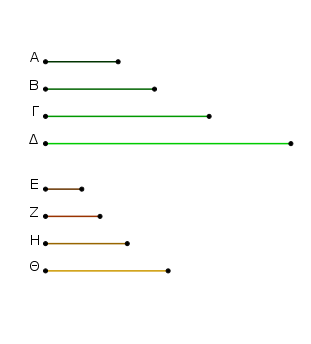
Εἰ γὰρ μή, ἔστωσαν ἐλάττονες τῶν Α, Β, Γ, Δ οἱ Ε, Ζ, Η, Θ ἐν τῷ αὐτῷ λόγῳ ὄντες αὐτοῖς. καὶ ἐπεὶ οἱ Α, Β, Γ, Δ ἐν τῷ αὐτῷ λόγῳ εἰσὶ τοῖς Ε, Ζ, Η, Θ, καί ἐστιν ἴσον τὸ πλῆθος [τῶν Α, Β, Γ, Δ] τῷ πλήθει [τῶν Ε, Ζ, Η, Θ], δι᾿ ἴσου ἄρα ἐστὶν ὡς ὁ Α πρὸς τὸν Δ, ὁ Ε πρὸς τὸν Θ.
οἱ δὲ Α, Δ πρῶτοι, οἱ δὲ πρῶτοι καὶ ἐλάχιστοι, οἱ δὲ ἐλάχιστοι ἀριθμοὶ μετροῦσι τοὺς τὸν αὐτὸν λόγον ἔχοντας ἰσάκις ὅ τε μείζων τὸν μείζονα καὶ ὁ ἐλάσσων τὸν ἐλάσσονα, τουτέστιν ὅ τε ἡγούμενος τὸν ἡγούμενον καὶ ὁ ἑπόμενος τὸν ἑπόμενον. μετρεῖ ἄρα ὁ Α τὸν Ε ὁ μείζων τὸν ἐλάσσονα· ὅπερ ἐστὶν ἀδύνατον. οὐκ ἄρα οἱ Ε, Ζ, Η, Θ ἐλάσσονες ὄντες τῶν Α, Β, Γ, Δ ἐν τῷ αὐτῷ λόγῳ εἰσὶν αὐτοῖς.
οἱ Α, Β, Γ, Δ ἄρα ἐλάχιστοί εἰσι τῶν τὸν αὐτὸν λόγον ἐχόντων αὐτοῖς· ὅπερ ἔδει δεῖξαι.
Αριθμοὺς εὑρεῖν ἑξῆς ἀνάλογον ἐλαχίστους, ὅσους ἂν ἐπιτάξῃ τις, ἐν τῷ δοθέντι λόγῳ.
῎Εστω ὁ δοθεὶς λόγος ἐν ἐλάχίστοις ἀριθμοῖς ὁ τοῦ Α πρὸς τὸν Β· δεῖ δὴ ἀριθμοὺς εὑρεῖν ἑξῆς ἀνάλογον ἐλαχίστους, ὅσους ἄν τις ἐπιτάξῃ, ἐν τῷ τοῦ Α πρὸς τὸν Β λόγῳ.
᾿Επιτετάχθωσαν δὴ τέσσαρες, καὶ ὁ Α ἑαυτὸν πολλαπλασιάσας τὸν Γ ποιείτω, τὸν δὲ Β πολλαπλασιάσας τὸν Δ ποιείτω, καὶ ἔτι ὁ Β ἑαυτὸν πολλαπλασιάσας τὸν Ε ποιείτω, καὶ ἔτι ὁ Α τοὺς Γ, Δ, Ε πολλαπλασιάσας τοὺς Ζ, Η, Θ ποιείτω, ὁ δὲ Β τὸν Ε πολλαπλασιάσας τὸν Κ ποιείτω.
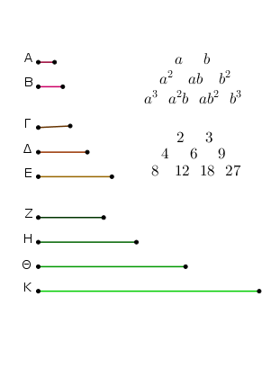
Καὶ ἐπεὶ ὁ Α ἑαυτὸν μὲν πολλαπλασιάσας τὸν Γ πεποίηκεν, τὸν δὲ Β πολλαπλασιάσας τὸν Δ πεποίηκεν, ἔστιν ἄρα ὡς ὁ Α πρὸς τὸν Β, [οὕτως] ὁ Γ πρὸς τὸν Δ.
πάλιν, ἐπεὶ ὁ μὲν Α τὸν Β πολλαπλασιάσας τὸν Δ πεποίηκεν, ὁ δὲ Β ἑαυτὸν πολλαπλασιάσας τὸν Ε πεποίηκεν, ἑκάτερος ἄρα τῶν Α, Β τὸν Β πολλαπλασιάσας ἑκάτερον τῶν Δ, Ε πεποίηκεν. ἔστιν ἄρα ὡς ὁ Α πρὸς τὸν Β, οὕτως ὁ Δ πρὸς τὸν Ε. ἀλλ᾿ ὡς ὁ Α πρὸς τὸν Β, ὁ Γ πρὸς τὸν Δ· καὶ ὡς ἄρα ὁ Γ πρὸς τὸν Δ, ὁ Δ πρὸς τὸν Ε. καὶ ἐπεὶ ὁ Α τοὺς Γ, Δ πολλαπλασιάσας τοὺς Ζ, Η πεποίηκεν, ἔστιν ἄρα ὡς ὁ Γ πρὸς τὸν Δ, [οὕτως] ὁ Ζ πρὸς τὸν Η. ὡς δὲ ὁ Γ πρὸς τὸν Δ, οὕτως ἦν ὁ Α πρὸς τὸν Β· καὶ ὡς ἄρα ὁ Α πρὸς τὸν Β, ὁ Ζ πρὸς τὸν Η.
πάλιν, ἐπεὶ ὁ Α τοὺς Δ, Ε πολλαπλασιάσας τοὺς Η, Θ πεποίηκεν, ἔστιν ἄρα ὡς ὁ Δ πρὸς τὸν Ε, ὁ Η πρὸς τὸν Θ. ἀλλ᾿ ὡς ὁ Δ πρὸς τὸν Ε, ὁ Α πρὸς τὸν Β. καὶ ὡς ἄρα ὁ Α πρὸς τὸν Β, οὕτως ὁ Η πρὸς τὸν Θ. καὶ ἐπεὶ οἱ Α, Β τὸν Ε πολλαπλασιάσαντες τοὺς Θ, Κ πεποιήκασιν, ἔστιν ἄρα ὡς ὁ Α πρὸς τὸν Β, οὕτως ὁ Θ πρὸς τὸν Κ. ἀλλ᾿ ὡς ὁ Α πρὸς τὸν Β, οὕτως ὅ τε Ζ πρὸς τὸν Η καὶ ὁ Η πρὸς τὸν Θ. καὶ ὡς ἄρα ὁ Ζ πρὸς τὸν Η, οὕτως ὅ τε Η πρὸς τὸν Θ καὶ ὁ Θ πρὸς τὸν Κ· οἱ Γ, Δ, Ε ἄρα καὶ οἱ Ζ, Η, Θ, Κ ἀνάλογόν εἰσιν ἐν τῷ τοῦ Α πρὸς τὸν Β λόγῳ.
λέγω δή, ὅτι καὶ ἐλάχιστοι. ἐπεὶ γὰρ οἱ Α, Β ἐλάχιστοί εἰσι τῶν τὸν αὐτὸν λόγον ἐχόντων αὐτοῖς, οἱ δὲ ἐλάχιστοι τῶν τὸν αὐτὸν λόγον ἐχόντων πρῶτοι πρὸς ἀλλήλους εἰσίν, οἱ Α, Β ἄρα πρῶτοι πρὸς ἀλλήλους εἰσίν. καὶ ἑκάτερος μὲν τῶν Α, Β ἑαυτὸν πολλαπλασιάσας ἑκάτερον τῶν Γ, Ε πεποίηκεν, ἑκάτερον δὲ τῶν Γ, Ε πολλαπλασιάσας ἑκάτερον τῶν Ζ, Κ πεποίηκεν· οἱ Γ, Ε ἄρα καὶ οἱ Ζ, Κ πρῶτοι πρὸς ἀλλήλους εἰσίν.
ἐὰν δὲ ὦσιν ὁποσοιοῦν ἀριθμοὶ ἑξῆς ἀνάλογον, οἱ δὲ ἄκροι αὐτῶν πρῶτοι πρὸς ἀλλήλους ὦσιν, ἐλάχιστοί εἰσι τῶν τὸν αὐτὸν λόγον ἐχόντων αὐτοῖς. οἱ Γ, Δ, Ε ἄρα καὶ οἱ Ζ, Η, Θ, Κ ἐλάχιστοί εἰσι τῶν τὸν αὐτὸν λόγον ἐχόντων τοῖς Α, Β· ὅπερ ἔδει δεῖξαι.
Πόρισμα ᾿Εκ δὴ τούτου φανερόν, ὅτι ἐὰν τρεῖς ἀριθμοὶ ἑξῆς ἀνάλογον ἐλάχιστοι ὦσι τῶν τὸν αὐτὸν λόγον ἐχόντων αὐτοῖς, οἱ ἄκρον αὐτῶν τετράγωνοί εἰσιν, ἐὰν δὲ τέσσαρες, κύβοι.
᾿Εὰν ὦσιν ὁποσοιοῦν ἀριθμοὶ ἑξῆς ἀνάλογον ἐλάχιστοι τῶν τὸν αὐτὸν λόγον ἐχόντων αὐτοῖς, οἱ ἄκροι αὐτῶν πρῶτοι πρὸς ἀλλήλους εἰσίν.
῎Εστωσαν ὁποσοιοῦν ἀριθμοὶ ἑξῆς ἀνάλογον ἐλάχιστοι τῶν τὸν αὐτὸν λόγον ἐχόντων αὐτοῖς οἱ Α, Β, Γ, Δ· λέγω, ὅτι οἱ ἄκροι αὐτῶν οἱ Α, Δ πρῶτοι πρὸς ἀλλήλους εἰσίν.
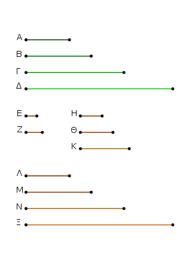
Εἰλήφθωσαν γὰρ δύο μὲν ἀριθμοὶ ἐλάχιστοι ἐν τῷ τῶν Α, Β, Γ, Δ λόγῳ οἱ Ε, Ζ, τρεῖς δὲ οἱ Η, Θ, Κ, καὶ ἑξῆς ἑνὶ πλείους, ἕως τὸ λαμβανόμενον πλῆθος ἴσον γένηται τῷ πλήθει τῶν Α, Β, Γ, Δ. εἰλήφθωσαν καὶ ἔστωσαν οἱ Λ, Μ, Ν, Ξ.
Καὶ ἐπεὶ οἱ Ε, Ζ ἐλάχιστοί εἰσι τῶν τὸν αὐτὸν λόγον ἐχόντων αὐτοῖς, πρῶτοι πρὸς ἀλλήλους εἰσίν.
καὶ ἐπεὶ ἑκάτερος τῶν Ε, Ζ ἑαυτὸν μὲν πολλαπλασιάσας ἑκάτερον τῶν Η, Κ πεποίηκεν, ἑκάτερον δὲ τῶν Η, Κ πολλαπλασιάσας ἑκάτερον τῶν Λ, Ξ πεποίηκεν, καὶ οἱ Η, Κ ἄρα καὶ οἱ Λ, Ξ πρῶτοι πρὸς ἀλλήλους εἰσίν.
καὶ ἐπεὶ οἱ Α, Β, Γ, Δ ἐλάχιστοί εἰσι τῶν τὸν αὐτὸν λόγον ἐχόντων αὐτοῖς, εἰσὶ δὲ καὶ οἱ Λ, Μ, Ν, Ξ ἐλάχιστοι ἐν τῷ αὐτῷ λόγῳ ὄντες τοῖς Α, Β, Γ, Δ, καί ἐστιν ἴσον τὸ πλῆθος τῶν Α, Β, Γ, Δ τῷ πλήθει τῶν Λ, Μ, Ν, Ξ, ἕκαστος ἄρα τῶν Α, Β, Γ, Δ ἑκάστῳ τῶν Λ, Μ, Ν, Ξ ἴσος ἐστίν· ἴσος ἄρα ἐστὶν ὁ μὲν Α τῷ Λ, ὁ δὲ Δ τῷ Ξ. καί εἰσιν οἱ Λ, Ξ πρῶτοι πρὸς ἀλλήλους. καὶ οἱ Α, Δ ἄρα πρῶτοι πρὸς ἀλλήλους εἰσίν· ὅπερ ἔδει δεῖξαι.
Λόγων δοθέντων ὁποσωνοῦν ἐν ἐλαχίστοις ἀριθμοῖς ἀριθμοὺς εὑρεῖν ἑξῆς ἀνάλογον ἐλαχίστους ἐν τοῖς δοθεῖσι λόγοις.
῎Εστωσαν οἱ δοθέντες λόγοι ἐν ἐλαχίστοις ἀριθμοῖς ὅ τε τοῦ Α πρὸς τὸν Β καὶ ὁ τοῦ Γ πρὸς τὸν Δ καὶ ἔτι ὁ τοῦ Ε πρὸς τὸν Ζ· δεῖ δὴ ἀριθμοὺς εὑρεῖν ἑξῆς ἀνάλογον ἐλαχίστους ἔν τε τῷ τοῦ Α πρὸς τὸν Β λόγῳ καὶ ἐν τῷ τοῦ Γ πρὸς τὸν Δ καὶ ἔτι τῷ τοῦ Ε πρὸς τὸν Ζ.
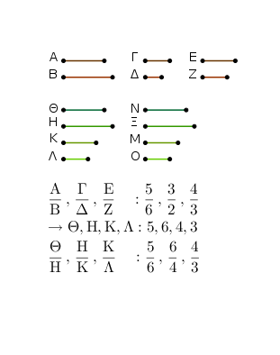
Εἰλήφθω γὰρ ὁ ὑπὸ τῶν Β, Γ ἐλάχιστος μετρούμενος ἀριθμὸς ὁ Η. καὶ ὁσάκις μὲν ὁ Β τὸν Η μετρεῖ, τοσαυτάκις καὶ ὁ Α τὸν Θ μετρείτω, ὁσάκις δὲ ὁ Γ τὸν Η μετρεῖ, τοσαυτάκις καὶ ὁ Δ τὸν Κ μετρείτω. ὁ δὲ Ε τὸν Κ ἤτοι μετρεῖ ἢ οὐ μετρεῖ.
μετρείτω πρότερον. καὶ ὁσάκις ὁ Ε τὸν Κ μετρεῖ, τοσαυτάκις καὶ ὁ Ζ τὸν Λ μετρείτω. καὶ ἐπεὶ ἰσάκις ὁ Α τὸν Θ μετρεῖ καὶ ὁ Β τὸν Η, ἔστιν ἄρα ὡς ὁ Α πρὸς τὸν Β, οὕτως ὁ Θ πρὸς τὸν Η. διὰ τὰ αὐτὰ δὴ καὶ ὡς ὁ Γ πρὸς τὸν Δ, οὕτως ὁ Η πρὸς τὸν Κ, καὶ ἔτι ὡς ὁ Ε πρὸς τὸν Ζ, οὕτως ὁ Κ πρὸς τὸν Λ· οἱ Θ, Η, Κ, Λ ἄρα ἑξῆς ἀνάλογόν εἰσιν ἔν τε τῷ τοῦ Α πρὸς τὸν Β καὶ ἐν τῷ τοῦ Γ πρὸς τὸν Δ καὶ ἔτι ἐν τῷ τοῦ Ε πρὸς τὸν Ζ λόγῳ.
λέγω δή, ὅτι καὶ ἐλάχιστοι. εἰ γὰρ μή εἰσιν οἱ Θ, Η, Κ, Λ ἑξῆς ἀνάλογον ἐλάχιστοι ἔν τε τοῖς τοῦ Α πρὸς τὸν Β καὶ τοῦ Γ πρὸς τὸν Δ καὶ ἐν τῷ τοῦ Ε πρὸς τὸν Ζ λόγοις, ἔστωσαν οἱ Ν, Ξ, Μ, Ο.
καὶ ἐπεί ἐστιν ὡς ὁ Α πρὸς τὸν Β, οὕτως ὁ Ν πρὸς τὸν Ξ, οἱ δὲ Α, Β ἐλάχιστοι, οἱ δὲ ἐλάχιστοι μετροῦσι τοὺς τὸν αὐτὸν λόγον ἔχοντας ἰσάκις ὅ τε μείζων τὸν μείζονα καὶ ὁ ἐλάσσων τὸν ἐλάσσονα, τουτέστιν ὅ τε ἡγούμενος τὸν ἡγούμενον καὶ ὁ ἑπόμενος τὸν ἑπόμενον, ὁ Β ἄρα τὸν Ξ μετρεῖ.
διὰ τὰ αὐτὰ δὴ καὶ ὁ Γ τὸν Ξ μετρεῖ· οἱ Β, Γ ἄρα τὸν Ξ μετροῦσιν· καὶ ὁ ἐλάχιστος ἄρα ὑπὸ τῶν Β, Γ μετρούμενος τὸν Ξ μετρήσει. ἐλάχιστος δὲ ὑπὸ τῶν Β, Γ μετρεῖται ὁ Η· ὁ Η ἄρα τὸν Ξ μετρεῖ ὁ μείζων τὸν ἐλάσσονα· ὅπερ ἐστὶν ἀδύντατον. οὐκ ἄρα ἔσονταί τινες τῶν Θ, Η, Κ, Λ ἐλάσσονες ἀριθμοὶ ἑξῆς ἔν τε τῷ τοῦ Α πρὸς τὸν Β καὶ τῷ τοῦ Γ πρὸς τὸν Δ καὶ ἔτι τῷ τοῦ Ε πρὸς τὸν Ζ λόγῷ.
Μὴ μετρείτω δὴ ὁ Ε τὸν Κ, καὶ εἰλήφθω ὑπὸ τῶν Ε, Κ ἐλάχιστος μετρούμενος ἀριθμὸς ὁ Μ. καὶ ὁσάκις μὲν ὁ Κ τὸν Μ μετρεῖ, τοσαυτάκις καὶ ἑκάτερος τῶν Θ, Η ἑκάτερον τῶν Ν, Ξ μετρείτω, ὁσάακις δὲ ὁ Ε τὸν Μ μετρεῖ, τοσαυτάκις καὶ ὁ Ζ τὸν Ο μετρείτω.
ἐπεὶ ἰσάκις ὁ Θ τὸν Ν μετρεῖ καὶ ὁ Η τὸν Ξ, ἔστιν ἄρα ὡς ὁ Θ πρὸς τὸν Η, οὕτως ὁ Ν πρὸς τὸν Ξ. ὡς δὲ ὁ Θ πρὸς τὸν Η, οὕτως ὁ Α πρὸς τὸν Β· καὶ ὡς ἄρα ὁ Α πρὸς τὸν Β, οὕτως ὁ Ν πρὸς τὸν Ξ. διὰ τὰ αὐτὰ δὴ καὶ ὡς ὁ Γ πρὸς τὸν Δ, οὕτως ὁ Ξ πρὸς τὸν Μ.
πάλιν, ἐπεὶ ἰσάκις ὁ Ε τὸν Μ μετρεῖ καὶ ὁ Ζ τὸν Ο, ἔστιν ἄρα ὡς ὁ Ε πρὸς τὸν Ζ, οὕτως ὁ Μ πρὸς τὸν Ο· οἱ Ν, Ξ, Μ, Ο ἄρα ἑξῆς ἀνάλογόν εἰσιν ἐν τοῖς τοῦ τε Α πρὸς τὸν Β καὶ τοῦ Γ πρὸς τὸν Δ καὶ ἔτι τοῦ Ε πρὸς τὸν Ζ λόγοις.
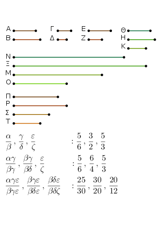
λέγω δή, ὅτι καὶ ἐλάχιστοι ἐν τοῖς Α Β, Γ Δ, Ε Ζ λόγοις. εἰ γὰρ μή, ἔσονταί τινες τῶν Ν, Ξ, Μ, Ο ἐλάσσονες ἀριθμοὶ ἑξῆς ἀνάλογον ἐν τοῖς Α Β, Γ Δ, Ε Ζ λόγοις. ἔστωσαν οἱ Π, Ρ, Σ, Τ.
καὶ ἐπεί ἐστιν ὡς ὁ Π πρὸς τὸν Ρ, οὕτως ὁ Α πρὸς τὸν Β, οἱ δὲ Α, Β ἐλάχιστοι, οἱ δὲ ἐλάχιστοι μετροῦσι τοὺς τὸν αὐτὸν λόγον ἔχοντας αὐτοῖς ἰσάκις ὅ τε ἡγούμενος τὸν ἡγούμενον καὶ ὁ ἑπόμενος τὸν ἑπόμενον, ὁ Β ἄρα τὸν Ρ μετρεῖ. διὰ τὰ αὐτὰ δὴ καὶ ὁ Γ τὸν Ρ μετρεῖ· οἱ Β, Γ ἄρα τὸν Ρ μετροῦσιν. καὶ ὁ ἐλάχιστος ἄρα ὑπὸ τῶν Β, Γ μετούμενος τὸν Ρ μετρήσει. ἐλάχιστος δὲ ὑπὸ τῶν Β, Γ μετρούμενος ἐστιν ὁ Η· ὁ Η ἄρα τὸν Ρ μετρεῖ. καί ἐστιν ὡς ὁ Η πρὸς τὸν Ρ, οὕτως ὁ Κ πρὸς τὸν Σ· καὶ ὁ Κ ἄρα τὸν Σ μετρεῖ. μετρεῖ δὲ καὶ ὁ Ε τὸν Σ· οἱ Ε, Κ ἄρα τὸν Σ μετροῦσιν. καὶ ὁ ἐλάχιστος ἄρα ὑπὸ τῶν Ε, Κ μετρούμενος τὸν Σ μετρήσει. ἐλάχιστος δὲ ὑπὸ τῶν Ε, Κ μετρούμενός ἐστιν ὁ Μ· ὁ Μ ἄρα τὸν Σ μετρεῖ ὁ μείζων τὸν ἐλάσσονα· ὅπερ ἐστὶν ἀδύνατον.
οὐκ ἄρα ἔσονταί τινες τῶν Ν, Ξ, Μ, Ο ἐλάσσονες ἀριθμοὶ ἑξῆς ἀνάλογον ἔν τε τοῖς τοῦ Α πρὸς τὸν Β καὶ τοῦ Γ πρὸς τὸν Δ καὶ ἔτι τοῦ Ε πρὸς τὸν Ζ λόγοις· οἱ Ν, Ξ, Μ, Ο ἄρα ἑξῆς ἀνάλογον ἐλάχιστοί εἰσιν ἐν τοῖς Α Β, Γ Δ, Ε Ζ λόγοις· ὅπερ ἔδει δεῖξαι.
Οἱ ἐπίπεδοι ἀριθμοὶ πρὸς ἀλλήλους λόγον ἔχουσι τὸν συγκείμενον ἐκ τῶν πλευρῶν.
῎Εστωσαν ἐπίπεδοι ἀριθμοὶ οἱ Α, Β, καὶ τοῦ μὲν Α πλευραὶ ἔστωσαν οἱ Γ, Δ ἀριθμοί, τοῦ δὲ Β οἱ Ε, Ζ· λέγω, ὅτι ὁ Α πρὸς τὸν Β λόγον ἔχει τὸν συγκείμενον ἐκ τῶν πλευρῶν.
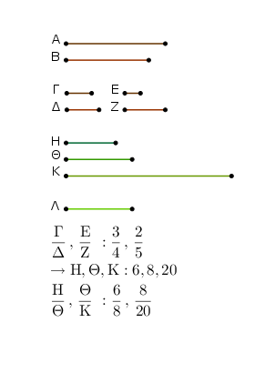
Λόγων γὰρ δοθέντων τοῦ τε ὃν ἔχει ὁ Γ πρὸς τὸν Ε καὶ ὁ Δ πρὸς τὸν Ζ εἰλήφθωσαν ἀριθμοὶ ἑξῆς ἐλάχιστοι ἐν τοῖς Γ Ε, Δ Ζ λόγοις, οἱ Η, Θ, Κ, ὥστε εἶναι ὡς μὲν τὸν Γ πρὸς τὸν Ε, οὕτως τὸν Η πρὸς τὸν Θ, ὡς δὲ τὸν Δ πρὸς τὸν Ζ, οὕτως τὸν Θ πρὸς τὸν Κ. καὶ ὁ Δ τὸν Ε πολλαπλασιάσας τὸν Λ ποιείτω.
Καὶ ἐπεὶ ὁ Δ τὸν μὲν Γ πολλαπλασιάσας τὸν Α πεποίηκεν, τὸν δὲ Ε πολλαπλασιάσας τὸν Λ πεποίηκεν, ἔστιν ἄρα ὡς ὁ Γ πρὸς τὸν Ε, οὕτως ὁ Α πρὸς τὸν Λ. ὡς δὲ ὁ Γ πρὸς τὸν Ε, οὕτως ὁ Η πρὸς τὸν Θ· καὶ ὡς ἄρα ὁ Η πρὸς τὸν Θ, οὕτως ὁ Α πρὸς τὸν Λ.
πάλιν, ἐπεὶ ὁ Ε τὸν Δ πολλαπλασιάσας τὸν Λ πεποίηκεν, ἀλλὰ μὴν καὶ τὸν Ζ πολλαπλασιάσας τὸν Β πεποίηκεν, ἔστιν ἄρα ὡς ὁ Δ πρὸς τὸν Ζ, οὕτως ὁ Λ πρὸς τὸν Β. ἀλλ᾿ ὡς ὁ Δ πρὸς τὸν Ζ, οὕτως ὁ Θ πρὸς τὸν Κ· καὶ ὡς ἄρα ὁ Θ πρὸς τὸν Κ, οὕτως ὁ Λ πρὸς τὸν Β.
ἐδείχθη δὲ καὶ ὡς ὁ Η πρὸς τὸν Θ, οὕτως ὁ Α πρὸς τὸν Λ· δι᾿ ἴσου ἄρα ἐστὶν ὡς ὁ Η πρὸς τὸν Κ, [οὕτως] ὁ Α πρὸς τὸν Β. ὁ δὲ Η πρὸς τὸν Κ λόγον ἔχει τὸν συγκείμενον ἐκ τῶν πλευρῶν· καὶ ὁ Α ἄρα πρὸς τὸν Β λόγον ἔχει τὸν συγκείμενον ἐκ τῶν πλευρῶν· ὅπερ ἔδει δεῖξαι.
᾿Εὰν ὦσιν ὁποσοιοῦν ἀριθμοὶ ἑξῆς ἀνάλογον, ὁ δὲ πρῶτος τὸν δεύτερον μὴ μετρῇ, οὐδὲ ἄλλος οὐδεὶς οὐδένα μετρήσει.
῎Εστωσαν ὁποσοιοῦν ἀριθμοὶ ἑξῆς ἀνάλογον οἱ Α, Β, Γ, Δ, Ε, ὁ δὲ Α τὸν Β μὴ μετρείτω· λέγω, ὅτι οὐδὲ ἄλλος οὐδεὶς οὐδένα μετρήσει.
῞Οτι μὲν οὖν οἱ Α, Β, Γ, Δ, Ε ἑξῆς ἀλλήλους οὐ μετροῦσιν, φανερόν· οὐδὲ γὰρ ὁ Α τὸν Β μετρεῖ. λέγω δή, ὅτι οὐδὲ ἄλλος οὐδεὶς οὐδένα μετρήσει.
εἰ γὰρ δυνατόν, μετρείτω ὁ Α τὸν Γ. καὶ ὅσοι εἰσὶν οἱ Α, Β, Γ, τοσοῦτοι εἰλήφθωσαν ἐλάχιστοι ἀριθμοὶ τῶν τὸν αὐτὸν λόγον ἐχόντων τοῖς Α, Β, Γ οἱ Ζ, Η, Θ.
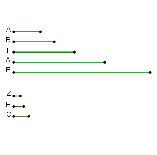
καὶ ἐπεὶ οἱ Ζ, Η, Θ ἐν τῷ αὐτῷ λόγῳ εἰσὶ τοῖς Α, Β, Γ, καί ἐστιν ἴσον τὸ πλῆθος τῶν Α, Β, Γ τῷ πλήθει τῶν Ζ, Η, Θ, δι᾿ ἴσου ἄρα ἐστὶν ὡς ὁ Α πρὸς τὸν Γ, οὕτως ὁ Ζ πρὸς τὸν Θ.
καὶ ἐπεί ἐστιν ὡς ὁ Α πρὸς τὸν Β, οὕτως ὁ Ζ πρὸς τὸν Η, οὐ μετρεῖ δὲ ὁ Α τὸν Β, οὐ μετρεῖ ἄρα οὐδὲ ὁ Ζ τὸν Η· οὐκ ἄρα μονάς ἐστιν ὁ Ζ· ἡ γὰρ μονὰς πάντα ἀριθμὸν μετρεῖ. καί εἰσιν οἱ Ζ, Θ πρῶτοι πρὸς ἀλλήλους [οὐδὲ ὁ Ζ ἄρα τὸν Θ μετρεῖ]. καί ἐστιν ὡς ὁ Ζ πρὸς τὸν Θ, οὕτως ὁ Α πρὸς τὸν Γ· οὐδὲ ὁ Α ἄρα τὸν Γ μετρεῖ.
ὁμοίως δὴ δείξομεν, ὅτι οὐδὲ ἄλλος οὐδεὶς οὐδένα μετρήσει· ὅπερ ἔδει δεῖξαι.
᾿Εὰν ὦσιν ὁποσοιοῦν ἀριθμοὶ [ἑξῆς] ἀνάλογον, ὁ δὲ πρῶτος τὸν ἔσχατον μετρῇ, καὶ τὸν δεύτερον μετρήσει.
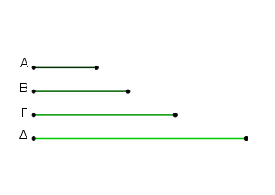
῎Εστωσαν ὁποσοιοῦν ἀριθμοὶ ἑξῆς ἀνάλογον οἱ Α, Β, Γ, Δ, ὁ δὲ Α τὸν Δ μετρείτω· λέγω, ὅτι καὶ ὁ Α τὸν Β μετρεῖ.
Εἰ γὰρ οὐ μετρεῖ ὁ Α τὸν Β, οὐδὲ ἄλλος οὐδεὶς οὐδένα μετρήσει· μετρεῖ δὲ ὁ Α τὸν Δ. μετρεῖ ἄρα καὶ ὁ Α τὸν Β· ὅπερ ἔδει δεῖξαι.
᾿Εὰν δύο ἀριθμῶν μεταξὺ κατὰ τὸ συνεχὲς ἀνάλογον ἐμπίπτωσιν ἀριθμοί, ὅσοι εἰς αὐτοὺς μεταξὺ κατὰ τὸ συνεχὲς ἀνόλογον ἐμπίπτουσιν ἀριθμοί, τοσοῦτοι καὶ εἰς τοὺς τὸν αὐτὸν λόγον ἔχοντας [αὐτοῖς] μεταξὺ κατὰ τὸ συνὲχες ἀνάλογον ἐμπεσοῦνται.
Δύο γὰρ ἀριθμῶν τῶν Α, Β μεταξὺ κατὰ τὸ συνεχὲς ἀνάλογον ἐμπιπτέτωσαν ἀριθμοὶ οἱ Γ, Δ, καὶ πεποιήσθω ὡς ὁ Α πρὸς τὸν Β, οὕτως ὁ Ε πρὸς τὸν Ζ· λέγω, ὅτι ὅσοι εἰς τοὺς Α, Β μεταξὺ κατὰ τὸ συνεχὲς ἀνάλογον ἐμπεπτώκασιν ἀριθμοί, τοσοῦτοι καὶ εἰς τοὺς Ε, Ζ μεταξὺ κατὰ τὸ συνεχὲς ἀνάλογον ἐμπεσοῦνται.
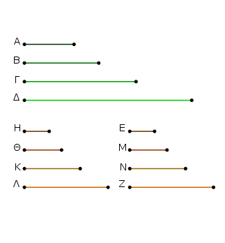
῞Οσοι γάρ εἰσι τῷ πλήθει οἱ Α, Β, Γ, Δ, τοσοῦτοι εἰλήφθωσαν ἐλάχιστοι ἀριθμοὶ τῶν τὸν αὐτὸν λόγον ἐχόντων τοῖς Α, Γ, Δ, Β οἱ Η, Θ, Κ, Λ· οἱ ἄρα ἄκροι αὐτῶν οἱ Η, Λ πρῶτοι πρὸς ἀλλήλους εἰσίν.
καὶ ἐπεὶ οἱ Α, Γ, Δ, Β τοῖς Η, Θ, Κ, Λ ἐν τῷ αὐτῷ λόγῳ εἰσίν, καί ἐστιν ἴσον τὸ πλῆθος τῶν Α, Γ, Δ, Β τῷ πλήθει τῶν Η, Θ, Κ, Λ, δι᾿ ἴσου ἄρα ἐστὶν ὡς ὁ Α πρὸς τὸν Β, οὕτως ὁ Η πρὸς τὸν Λ. ὡς δὲ ὁ Α πρὸς τὸν Β, οὕτως ὁ Ε πρὸς τὸν Ζ· καὶ ὡς ἄρα ὁ Η πρὸς τὸν Λ, οὕτως ὁ Ε πρὸς τὸν Ζ.
οἱ δὲ Η, Λ πρῶτοι, οἱ δὲ πρῶτοι καὶ ἐλάχιστοι, οἱ δὲ ἐλάχιστοι ἀριθμοὶ μετροῦσι τοὺς τὸν αὐτὸν λόγον ἔχοντας ἰσάκις ὅ τε μείζων τὸν μείζονα καὶ ὁ ἐλάσσων τὸν ἐλάσσονα, τουτέστιν ὅ τε ἡγούμενος τὸν ἡγούμενον καὶ ὁ ἑπόμενος τὸν ἑπόμενον. ἰσάκις ἄρα ὁ Η τὸν Ε μετρεῖ καὶ ὁ Λ τὸν Ζ. ὁσάκις δὴ ὁ Η τὸν Ε μετρεῖ, τοσαυτάκις καὶ ἑκάτερος τῶν Θ, Κ ἑκάτερον τῶν Μ, Ν μετρείτω· οἱ Η, Θ, Κ, Λ ἄρα τοὺς Ε, Μ, Ν, Ζ ἰσάκις μετροῦσιν. οἱ Η, Θ, Κ, Λ ἄρα τοῖς Ε, Μ, Ν, Ζ ἐν τῷ αὐτῷ λόγῳ εἰσίν.
ἀλλὰ οἱ Η, Θ, Κ, Λ τοῖς Α, Γ, Δ, Β ἐν τῷ αὐτῷ λόγῳ εἰσίν· καὶ οἱ Α, Γ, Δ, Β ἄρα τοῖς Ε, Μ, Ν, Ζ ἐν τῷ αὐτῷ λόγῳ εἰσίν. οἱ δὲ Α, Γ, Δ, Β ἑξῆς ἀνάλογόν εἰσιν· καὶ οἱ Ε, Μ, Ν, Ζ ἄρα ἑξῆς ἀνάλογόν εἰσιν. ὅσοι ἄρα εἰς τοὺς Α, Β μεταξὺ κατὰ τὸ συνεχὲς ἀνάλογον ἐμπεπτώκασιν ἀριθμοί, τοσοῦτοι καὶ εἰς τοὺς Ε, Ζ μεταξὺ κατὰ τὸ συνεχὲς ἀνάλογον ἐμπεπτώκασιν ἀριθμοί· ὅπερ ἔδει δεῖξαι.
᾿Εὰν δύο ἀριθμοὶ πρῶτοι πρὸς ἀλλήλους ὦσιν, καὶ εἰς αὐτοὺς μεταξὺ κατὰ τὸ συνεχὲς ἀνάλογον ἐμπίπτωσιν ἀριθμοί, ὅσοι εἰς αὐτοὺς μεταξὺ κατὰ τὸ συνεχὲς ἀνάλογον ἐμπίπτουσιν ἀριθμοί, τοσοῦτοι καὶ ἑκατέρου αὐτῶν καὶ μονάδος μεταξὺ κατὰ τὸ συνεχὲς ἀνάλογον ἐμπεσοῦνται.
῎Εστωσαν δύο ἀριθμοὶ πρῶτοι πρὸς ἀλλήλους οἱ Α, Β, καὶ εἰς αὐτοὺς μεταξὺ κατὰ τὸ συνεχὲς ἀνάλογον ἐμπιπτέτωσαν οἱ Γ, Δ, καὶ ἐκκείσθω ἡ Ε μονάς· λέγω, ὅτι ὅσοι εἰς τοὺς Α, Β μεταξὺ κατὰ τὸ συνεχὲς ἀνάλογον ἐμπεπτώκασιν ἀριθμοί, τοσοῦτοι καὶ ἑκατέρου τῶν Α, Β καὶ τῆς μονάδος μεταξὺ κατὰ τὸ συνεχὲς ἀνάλογον ἐμπεσοῦνται.
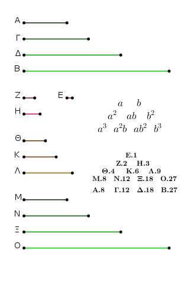
Εἰλήφθωσαν γὰρ δύο μὲν ἀριθμοὶ ἐλάχιστοι ἐν τῷ τῶν Α, Γ, Δ, Β λόγῳ ὄντες οἱ Ζ, Η, τρεῖς δὲ οἱ Θ, Κ, Λ, καὶ ἀεὶ ἑξῆς ἑνὶ πλείους, ἕως ἂν ἴσον γένηται τὸ πλῆθος αὐτῶν τῷ πλήθει τῶν Α, Γ, Δ, Β. εἰλήφθωσαν, καὶ ἔστωσαν οἱ Μ, Ν, Ξ, Ο.
φανερὸν δή, ὅτι ὁ μὲν Ζ ἑαυτὸν πολλαπλασιάσας τὸν Θ πεποίηκεν, τὸν δὲ Θ πολλαπλασιάσας τὸν Μ πεποίηκεν, καὶ ὁ Η ἑαυτὸν μὲν πολλαπλασιάσας τὸν Λ πεποίηκεν, τὸν δὲ Λ πολλαπλασιάσας τὸν Ο πεποίηκεν.
καὶ ἐπεὶ οἱ Μ, Ν, Ξ, Ο ἐλάχιστοί εἰσι τῶν τὸν αὐτὸν λόγον ἐχόντων τοῖς Ζ, Η, εἰσὶ δὲ καὶ οἱ Α, Γ, Δ, Β ἐλάχιστοι τῶν τὸν αὐτὸν λόγον ἐχόντων τοῖς Ζ, Η, καί ἐστιν ἴσον τὸ πλῆθος τῶν Μ, Ν, Ξ, Ο τῷ πλήθει τῶν Α, Γ, Δ, Β, ἕκαστος ἄρα τῶν Μ, Ν, Ξ, Ο ἑκάστῳ τῶν Α, Γ, Δ, Β ἴσος ἐστίν· ἴσος ἄρα ἐστὶν ὁ μὲν Μ τῷ Α, ὁ δὲ Ο τῷ Β.
καὶ ἐπεὶ ὁ Ζ ἑαυτὸν πολλαπλασιάσας τὸν Θ πεποίηκεν, ὁ Ζ ἄρα τὸν Θ μετρεῖ κατὰ τὰς ἐν τῷ Ζ μονάδας. μετρεῖ δὲ καὶ ἡ Ε μονὰς τὸν Ζ κατὰ τὰς ἐν αὐτῷ μονάδας· ἰσάκις ἄρα ἡ Ε μονὰς τὸν Ζ ἀριθμὸν μετρεῖ καὶ ὁ Ζ τὸν Θ. ἔστιν ἄρα ὡς ἡ Ε μονὰς πρὸς τὸν Ζ ἀριθμόν, οὕτως ὁ Ζ πρὸς τὸν Θ. πάλιν, ἐπεὶ ὁ Ζ τὸν Θ πολλαπλασιάσας τὸν Μ πεποίηκεν, ὁ Θ ἄρα τὸν Μ μετρεῖ κατὰ τὰς ἐν τῷ Ζ μονάδας. μετρεῖ δὲ καὶ ἡ Ε μονὰς τὸν Ζ ἀριθμὸν κατὰ τὰς ἐν αὐτῷ μονάδας· ἰσάκις ἄρα ἡ Ε μονὰς τὸν Ζ ἀριθμὸν μετρεῖ καὶ ὁ Θ τὸν Μ. ἔστιν ἄρα ὡς ἡ Ε μονὰς πρὸς τὸν Ζ ἀριθμόν, οὕτως ὁ Θ πρὸς τὸν Μ.
ἐδείχθη δὲ καὶ ὡς ἡ Ε μονὰς πρὸς τὸν Ζ ἀριθμόν, οὕτως ὁ Ζ πρὸς τὸν Θ· καὶ ὡς ἄρα ἡ Ε μονὰς πρὸς τὸν Ζ ἀριθμόν, οὕτως ὁ Ζ πρὸς τὸν Θ καὶ ὁ Θ πρὸς τὸν Μ. ἴσος δὲ ὁ Μ τῷ Α· ἔστιν ἄρα ὡς ἡ Ε μονὰς πρὸς τὸν Ζ ἀριθμόν, οὕτως ὁ Ζ πρὸς τὸν Θ καὶ ὁ Θ πρὸς τὸν Α.
διὰ τὰ αὐτὰ δὴ καὶ ὡς ἡ Ε μονὰς πρὸς τὸν Η ἀριθμόν, οὕτως ὁ Η πρὸς τὸν Λ καὶ ὁ Λ πρὸς τὸν Β. ὅσοι ἄρα εἰς τοὺς Α, Β μεταξὺ κατὰ τὸ συνεχὲς ἀνάλογον ἐμπεπτώκασιν ἀριθμοί, τοσοῦτοι καὶ ἑκατέρου τῶν Α, Β καὶ μονάδος τῆς Ε μεταξὺ κατὰ τὸ συνεχὲς ἀνάλογον ἐμπεπτώκασιν ἀριθμοί· ὅπερ ἔδει δεῖξαι.
᾿Εάν δύο ἀριθμῶν ἑκατέρου καὶ μονάδος μεταξὺ κατὰ τὸ συνεχὲς ἀνάλογον ἐμπίπτωσιν ἀριθμοί, ὅσοι ἑκατέρου αὐτῶν καὶ μονάδος μεταξὺ κατὰ τὸ συνεχὲς ἀνάλογον ἐμπίπτουσιν ἀριθμοί, τοσοῦτοι καὶ εἰς αὐτοὺς μεταξὺ κατὰ τὸ συνεχὲς ἀνάλογον ἐμπεσοῦνται.
Δύο γὰρ ἀριθμῶν τῶν Α, Β καὶ μονάδος τῆς Γ μεταξύ κατὰ τὸ συνεχὲς ἀνάλογον ἐμπιπτέτωσαν ἀριθμοὶ οἵ τε Δ, Ε καὶ οἱ Ζ, Η· λέγω, ὅτι ὅσοι ἑκατέρου τῶν Α, Β καὶ μονάδος τῆς Γ μεταξὺ κατὰ τὸ συνεχὲς ἀνάλογον ἐμπεπτώκασιν ἀριθμοί, τοσοῦτοι καὶ εἰς τοὺς Α, Β μεταξὺ κατὰ τὸ συνεχὲς ἀνάλογον ἐμπεσοῦνται.
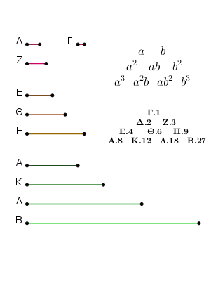
῾Ο Δ γὰρ τὸν Ζ πολλαπλασιάσας τὸν Θ ποιείτω, ἑκάτερος δὲ τῶν Δ, Ζ τὸν Θ πολλαπλασιάσας ἑκάτερον τῶν Κ, Λ ποιείτω. Καὶ ἐπεί ἐστιν ὡς ἡ Γ μονὰς πρὸς τὸν Δ ἀριθμόν, οὕτως ὁ Δ πρὸς τὸν Ε, ἰσάκις ἄρα ἡ Γ μονὰς τὸν Δ ἀριθμὸν μετρεῖ καὶ ὁ Δ τὸν Ε. ἡ δὲ Γ μονὰς τὸν Δ ἀριθμὸν μετρεῖ κατὰ τὰς ἐν τῷ Δ μονάδας· καὶ ὁ Δ ἄρα ἀριθμὸς τὸν Ε μετρεῖ κατὰ τὰς ἐν τῷ Δ μονάδας· ὁ Δ ἄρα ἑαυτὸν πολλαπλασιάσας τὸν Ε πεποίηκεν.
πάλιν, ἐπεί ἐστιν ὡς ἡ Γ [μονὰς] πρὸς τὸν Δ ἀριθμὸν, οὕτως ὁ Ε πρὸς τὸν Α, ἰσάκις ἄρα ἡ Γ μονὰς τὸν Δ ἀριθμὸν μετρεῖ καὶ ὁ Ε τὸν Α. ἡ δὲ Γ μονὰς τὸν Δ ἀριθμὸν μετρεῖ κατὰ τὰς ἐν τῷ Δ μονάδας· καὶ ὁ Ε ἄρα τὸν Α μετρεῖ κατὰ τὰς ἐν τῷ Δ μονάδας· ὁ Δ ἄρα τὸν Ε πολλαπλασιάσας τὸν Α πεποίηκεν. διὰ τὰ αὐτὰ δὴ καὶ ὁ μὲν Ζ ἑαυτὸν πολλαπλασιάσας τὸν Η πεποίηκεν, τὸν δὲ Η πολλαπλασιάσας τὸν Β πεποίηκεν.
καὶ ἐπεὶ ὁ Δ ἑαυτὸν μὲν πολλαπλασιάσας τὸν Ε πεποίηκεν, τὸν δὲ Ζ πολλαπλασιάσας τὸν Θ πεποίηκεν, ἔστιν ἄρα ὡς ὁ Δ πρὸς τὸν Ζ, οὕτως ὁ Ε πρὸς τὸν Θ. διὰ τὰ αὐτὰ δὴ καὶ ὡς ὁ Δ πρὸς τὸν Ζ, οὕτως ὁ Θ πρὸς τὸν Η. καὶ ὡς ἄρα ὁ Ε πρὸς τὸν Θ, οὕτως ὁ Θ πρὸς τὸν Η.
πάλιν, ἐπεὶ ὁ Δ ἑκάτερον τῶν Ε, Θ πολλαπλασιάσας ἑκάτερον τῶν Α, Κ πεποίηκεν, ἔστιν ἄρα ὡς ὁ Ε πρὸς τὸν Θ, οὕτως ὁ Α πρὸς τὸν Κ. ἀλλ᾿ ὡς ὁ Ε πρὸς τὸν Θ, οὕτως ὁ Δ πρὸς τὸν Ζ· καὶ ὡς ἄρα ὁ Δ πρὸς τὸν Ζ, οὕτως ὁ Α πρὸς τὸν Κ.
πάλιν, ἐπεὶ ἑκάτερος τῶν Δ, Ζ τὸν Θ πολλαπλασιάσας ἑκάτερον τῶν Κ, Λ πεποίηκεν, ἕστιν ἄρα ὡς ὁ Δ πρὸς τὸν Ζ, οὕτως ὁ Κ πρὸς τὸν Λ. ἀλλ᾿ ὡς ὁ Δ πρὸς τὸν Ζ, οὕτως ὁ Α πρὸς τὸν Κ· καὶ ὡς ἄρα ὁ Α πρὸς τὸν Κ, οὕτως ὁ Κ πρὸς τὸν Λ. ἔτι ἐπεὶ ὁ Ζ ἑκάτερον τῶν Θ, Η πολλαπλασιάσας ἑκάτερον τῶν Λ, Β πεποίηκεν, ἔστιν ἄρα ὡς ὁ Θ πρὸς τὸν Η, οὕτως ὁ Λ πρὸς τὸν Β. ὡς δὲ ὁ Θ πρὸς τὸν Η, οὕτως ὁ Δ πρὸς τὸν Ζ· καὶ ὡς ἄρα ὁ Δ πρὸς τὸν Ζ, οὕτως ὁ Λ πρὸς τὸν Β.
ἐδείχθη δὲ καὶ ὡς ὁ Δ πρὸς τὸν Ζ, οὕτως ὅ τε Α πρὸς τὸν Κ καὶ ὁ Κ πρὸς τὸν Λ· καὶ ὡς ἄρα ὁ Α πρὸς τὸν Κ, οὕτως ὁ Κ πρὸς τὸν Λ καὶ ὁ Λ πρὸς τὸν Β. οἱ Α, Κ, Λ, Β ἄρα κατὰ τὸ συνεχὲς ἑξῆς εἰσιν ἀνάλογον. ὅσοι ἄρα ἑκατέρου τῶν Α, Β καὶ τῆς Γ μονάδος μεταξὺ κατὰ τὸ συνεχὲς ἀνάλογον ἐμπίπτουσιν ἀριθμοί, τοσοῦτοι καὶ εἰς τοὺς Α, Β μεταξὺ κατὰ τὸ συνεχὲς ἐμπεσοῦνται· ὅπερ ἔδει δεῖξαι.
Δύο τετραγώνων ἀριθμῶν εἷς μέσος ἀνάλογόν ἐστιν ἀριθμός, καὶ ὁ τετράγωνος πρὸς τὸν τετράγωνον διπλασίονα λόγον ἔχει ἤπερ ἡ πλευρὰ πρὸς τὴν πλευράν.
῎Εστωσαν τετράγωνοι ἀριθμοὶ οἱ Α, Β, καὶ τοῦ μὲν Α πλευρὰ ἔστω ὁ Γ, τοῦ δὲ Β ὁ Δ· λέγω, ὅτι τῶν Α, Β εἷς μέσος ἀνάλογόν ἐστιν ἀριθμός, καὶ ὁ Α πρὸς τὸν Β διπλασίονα λόγον ἔχει ἤπερ ὁ Γ πρὸς τὸν Δ.
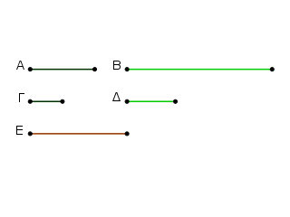
῾Ο Γ γὰρ τὸν Δ πολλαπλασιάσας τὸν Ε ποιείτω. καὶ ἐπεὶ τετράγωνός ἐστιν ὁ Α, πλευρὰ δὲ αὐτοῦ ἐστιν ὁ Γ, ὁ Γ ἄρα ἑαυτὸν πολλαπλασιάσας τὸν Α πεποίηκεν. διὰ τὰ αὐτὰ δὴ καὶ ὁ Δ ἑαυτὸν πολλαπλασιάσας τὸν Β πεποίηκεν.
ἐπεὶ οὖν ὁ Γ ἑκάτερον τῶν Γ, Δ πολλαπλασιάσας ἑκάτερον τῶν Α, Ε πεποίηκεν, ἔστιν ἄρα ὡς ὁ Γ πρὸς τὸν Δ, οὕτως ὁ Α πρὸς τὸν Ε. διὰ τὰ αὐτὰ δὴ καὶ ὡς ὁ Γ πρὸς τὸν Δ, οὕτως ὁ Ε πρὸς τὸν Β. καὶ ὡς ἄρα ὁ Α πρὸς τὸν Ε, οὕτως ὁ Ε πρὸς τὸν Β. τῶν Α, Β ἄρα εἷς μέσος ἀνάλογόν ἐστιν ἀριθμός.
Λέγω δή, ὅτι καὶ ὁ Α πρὸς τὸν Β διπλασίονα λόγον ἔχει ἤπερ ὁ Γ πρὸς τὸν Δ. ἐπεὶ γὰρ τρεῖς ἀριθμοὶ ἀνάλογόν εἰσιν οἱ Α, Ε, Β, ὁ Α ἄρα πρὸς τὸν Β διπλασίονα λόγον ἔχει ἤπερ ὁ Α πρὸς τὸν Ε. ὡς δὲ ὁ Α πρὸς τὸν Ε, οὕτως ὁ Γ πρὸς τὸν Δ. ὁ Α ἄρα πρὸς τὸν Β διπλασίονα λόγον ἔχει ἤπερ ἡ Γ πλευρὰ πρὸς τὴν Δ· ὅπερ ἔδει δεῖξαι.
Δύο κύβων ἀριθμῶν δύο μέσοι ἀνάλογόν εἰσιν ἀριθμοί, καὶ ὁ κύβος πρὸς τὸν κύβον τριπλασίονα λόγον ἔχει ἤπερ ἡ πλευρὰ πρὸς τὴν πλευράν.
῎Εστωσαν κύβοι ἀριθμοὶ οἱ Α, Β καὶ τοῦ μὲν Α πλευρὰ ἔστω ὁ Γ, τοῦ δὲ Β ὁ Δ· λέγω, ὅτι τῶν Α, Β δύο μέσοι ἀνάλογόν εἰσιν ἀριθμοί, καὶ ὁ Α πρὸς τὸν Β τριπλασίονα λόγον ἔχει ἤπερ ὁ Γ πρὸς τὸν Δ.
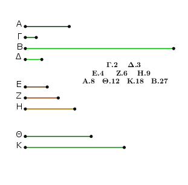
῾Ο γὰρ Γ ἑαυτὸν μὲν πολλαπλασιάσας τὸν Ε ποιείτω, τὸν δὲ Δ πολλαπλασιάσας τὸν Ζ ποιείτω, ὁ δὲ Δ ἑαυτὸν πολλαπλασιάσας τὸν Η ποιείτω, ἑκάτερος δὲ τῶν Γ, Δ τὸν Ζ πολλαπλασιάσας ἑκάτερον τῶν Θ, Κ ποιείτω.
Καὶ ἐπεὶ κύβος ἐστὶν ὁ Α, πλευρὰ δὲ αὐτοῦ ὁ Γ, καὶ ὁ Γ ἑαυτὸν μὲν πολλαπλασιάσας τὸν Ε πεποίηκεν, ὁ Γ ἄρα ἑαυτὸν μὲν πολλαπλασιάσας τὸν Ε πεποίηκεν, τὸν δὲ Ε πολλαπλασιάσας τὸν Α πεποίηκεν. διὰ τὰ αὐτὰ δὴ καὶ ὁ Δ ἑαυτὸν μὲν πολλαπλασιάσας τὸν Η πεποίηκεν, τὸν δὲ Η πολλαπλασιάσας τὸν Β πεποίηκεν.
καὶ ἐπεὶ ὁ Γ ἑκάτερον τῶν Γ, Δ πολλαπλασιάσας ἑκάτερον τῶν Ε, Ζ πεποίηκεν, ἔστιν ἄρα ὡς ὁ Γ πρὸς τὸν Δ, οὕτως ὁ Ε πρὸς τὸν Ζ. διὰ τὰ αὐτὰ δὴ καὶ ὡς ὁ Γ πρὸς τὸν Δ, οὕτως ὁ Ζ πρὸς τὸν Η. πάλιν, ἐπεὶ ὁ Γ ἑκάτερον τῶν Ε, Ζ πολλαπλασιάσας ἑκάτερον τῶν Α, Θ πεποίηκεν, ἔστιν ἄρα ὡς ὁ Ε πρὸς τὸν Ζ, οὕτως ὁ Α πρὸς τὸν Θ. ὡς δὲ ὁ Ε πρὸς τὸν Ζ, οὕτως ὁ Γ πρὸς τὸν Δ· καὶ ὡς ἄρα ὁ Γ πρὸς τὸν Δ, οὕτως ὁ Α πρὸς τὸν Θ.
πάλιν, ἐπεὶ ἑκάτερος τῶν Γ, Δ τὸν Ζ πολλαπλασιάσας ἑκάτερον τῶν Θ, Κ πεποίηκεν, ἔστιν ἄρα ὡς ὁ Γ πρὸς τὸν Δ, οὕτως ὁ Θ πρὸς τὸν Κ. πάλιν, ἐπεὶ ὁ Δ ἑκάτερον τῶν Ζ, Η πολλαπλασιάσας ἑκάτερον τῶν Κ, Β πεποίηκεν, ἔστιν ἄρα ὡς ὁ Ζ πρὸς τὸν Η, οὕτως ὁ Κ πρὸς τὸν Β. ὡς δὲ ὁ Ζ πρὸς τὸν Η, οὕτως ὁ Γ πρὸς τὸν Δ· καὶ ὡς ἄρα ὁ Γ πρὸς τὸν Δ, οὕτως ὅ τε Α πρὸς τὸν Θ καὶ ὁ Θ πρὸς τὸν Κ καὶ ὁ Κ πρὸς τὸν Β. τῶν Α, Β ἄρα δύο μέσοι ἀνάλογόν εἰσιν οἱ Θ, Κ.
Λέγω δή, ὅτι καὶ ὁ Α πρὸς τὸν Β τριπλασίονα λόγον ἔχει ἤπερ ὁ Γ πρὸς τὸν Δ. ἐπεὶ γὰρ τέσσαρες ἀριθμοὶ ἀνάλογόν εἰσιν οἱ Α, Θ, Κ, Β, ὁ Α ἄρα πρὸς τὸν Β τριπλασίονα λόγον ἔχει ἤπερ ὁ Α πρὸς τὸν Θ. ὡς δὲ ὁ Α πρὸς τὸν Θ, οὕτως ὁ Γ πρὸς τὸν Δ· καὶ ὁ Α [ἄρα] πρὸς τὸν Β τριπλασίονα λόγον ἔχει ἤπερ ὁ Γ πρὸς τὸν Δ· ὅπερ ἔδει δεῖξαι.
᾿Εὰν ὦσιν ὁσοιδηποτοῦν ἀριθμοὶ ἑξῆς ἀνάλογον, καὶ πολλαπλασιάσας ἕκαστος ἑαυτὸν ποιῇ τινα, οἱ γενόμενοι ἐξ αὐτῶν ἀνάλογον ἔσονται· καὶ ἐὰν οἱ ἐξ ἀρχῆς τοὺς γενομένους πολλαπλασιάσαντες ποιῶσί τινας, καὶ αὐτοὶ ἀνάλογον ἔσονται [καὶ ἀεὶ περὶ τοὺς ἄκρους τοῦτο συμβαίνει].
῎Εστωσαν ὁποσοιοῦν ἀριθμοὶ ἑξῆς ἀνάλογον, οἱ Α, Β, Γ, ὡς ὁ Α πρὸς τὸν Β, οὕτως ὁ Β πρὸς τὸν Γ, καὶ οἱ Α, Β, Γ ἑαυτοὺς μὲν πολλαπλασιάσαντες τοὺς Δ, Ε, Ζ ποιείτωσαν, τοὺς δὲ Δ, Ε, Ζ πολλαπλασιάσαντες τοὺς Η, Θ, Κ ποιείτωσαν· λέγω, ὅτι οἵ τε Δ, Ε, Ζ καὶ οἱ Η, Θ, Κ ἑξῆς ἀνάλογον εἰσιν.
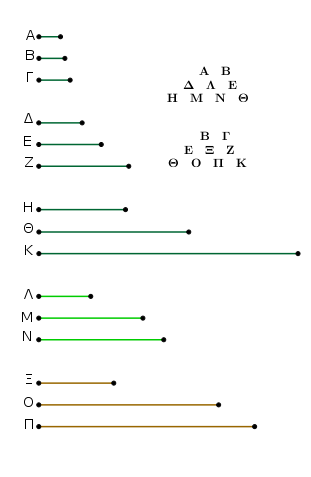
῾Ο μὲν γὰρ Α τὸν Β πολλαπλασιάσας τὸν Λ ποιείτω, ἑκάτερος δὲ τῶν Α, Β τὸν Λ πολλαπλασιάσας ἑκάτερον τῶν Μ, Ν ποιείτω. καὶ πάλιν ὁ μὲν Β τὸν Γ πολλαπλασιάσας τὸν Ξ ποιείτω, ἑκάτερος δὲ τῶν Β, Γ τὸν Ξ πολλαπλασιάσας ἑκάτερον τῶν Ο, Π ποιείτω.
῾Ομοίως δὴ τοῖς ἐπάνω δεῖξομεν, ὅτι οἱ Δ, Λ, Ε καὶ οἱ Η, Μ, Ν, Θ ἑξῆς εἰσιν ἀνάλογον ἐν τῷ τοῦ Α πρὸς τὸν Β λόγῳ, καὶ ἔτι οἱ Ε, Ξ, Ζ καὶ οἱ Θ, Ο, Π, Κ ἑξῆς εἰσιν ἀνάλογον ἐν τῷ τοῦ Β πρὸς τὸν Γ λόγῳ. καί ἐστιν ὡς ὁ Α πρὸς τὸν Β, οὕτως ὁ Β πρὸς τὸν Γ· καὶ οἱ Δ, Λ, Ε ἄρα τοῖς Ε, Ξ, Ζ ἐν τῷ αὐτῷ λόγῳ εἰσὶ καὶ ἔτι οἱ Η, Μ, Ν, Θ τοῖς Θ, Ο, Π, Κ. καί ἐστιν ἴσον τὸ μὲν τῶν Δ, Λ, Ε πλῆθος τῷ τῶν Ε, Ξ, Ζ πλήθει, τὸ δὲ τῶν Η, Μ, Ν, Θ τῷ τῶν Θ, Ο, Π, Κ· δι᾿ ἴσου ἄρα ἐστὶν ὡς μὲν ὁ Δ πρὸς τὸν Ε, οὕτως ὁ Ε πρὸς τὸν Ζ, ὡς δὲ ὁ Η πρὸς τὸν Θ, οὕτως ὁ Θ πρὸς τὸν Κ· ὅπερ ἔδει δεῖξαι.
᾿Εὰν τετράγωνος τετράγωνον μετρῇ, καὶ ἡ πλευρὰ τὴν πλευρὰν μετρήσει· καὶ ἐὰν ἡ πλευρὰ τὴν πλευρὰν μετρῇ, καὶ ὁ τετράγωνος τὸν τετράγωνον μετρήσει.
῎Εστωσαν τετράγωνοι ἀριθμοὶ οἱ Α, Β, πλευραὶ δὲ αὐτῶν ἔστωσαν οἱ Γ, Δ, ὁ δὲ Α τὸν Β μετρείτω· λέγω, ὅτι καὶ ὁ Γ τὸν Δ μετρεῖ.
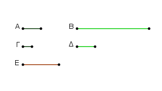
῾Ο Γ γὰρ τὸν Δ πολλαπλασιάσας τὸν Ε ποιείτω· οἱ Α, Ε, Β ἄρα ἑξῆς ἀνάλογόν εἰσιν ἐν τῷ τοῦ Γ πρὸς τὸν Δ λόγῳ. καὶ ἐπεὶ οἱ Α, Ε, Β ἐξῆς ἀνάλογόν εἰσιν, καὶ μετρεῖ ὁ Α τὸν Β, μετρεῖ ἄρα καὶ ὁ Α τὸν Ε. καί ἐστιν ὡς ὁ Α πρὸς τὸν Ε, οὕτως ὁ Γ πρὸς τὸν Δ· μετρεῖ ἄρα καὶ ὁ Γ τὸν Δ.
Πάλιν δὴ ὁ Γ τὸν Δ μετρείτω· λέγω, ὅτι καὶ ὁ Α τὸν Β μετρεῖ. Τῶν γὰρ αὐτῶν κατασκευασθέντων ὁμοίως δείξομεν, ὅτι οἱ Α, Ε, Β ἑξῆς ἀνάλογόν εἰσιν ἐν τῷ τοῦ Γ πρὸς τὸν Δ λόγῳ. καὶ ἐπεί ἐστιν ὡς ὁ Γ πρὸς τὸν Δ, οὕτως ὁ Α πρὸς τὸν Ε, μετρεῖ δὲ ὁ Γ τὸν Δ, μετρεῖ ἄρα καὶ ὁ Α τὸν Ε. καί εἰσιν οἱ Α, Ε, Β ἑξῆς ἀνάλογον· μετρεῖ ἄρα καὶ ὁ Α τὸν Β.
᾿Εὰν ἄρα τετράγωνος τετράγωνον μετρῇ, καὶ ἡ πλευρὰ τὴν πλευρὰν μετρήσει· καὶ ἐὰν ἡ πλευρὰ τὴν πλευρὰν μετρῇ, καὶ ὁ τετράγωνος τὸν τετράγωνον μετρήσει· ὅπερ ἔδει δεῖξαι.
᾿Εὰν κύβος ἀριθμὸς κύβον ἀριθμὸν μετρῇ, καὶ ἡ πλευρὰ τὴν πλευρὰν μετρήσει· καὶ ἐὰν ἡ πλευρὰ τὴν πλευρὰν μετρῇ, καὶ ὁ κύβος τὸν κύβον μετρήσει.
Κύβος γὰρ ἀριθμὸς ὁ Α κύβον τὸν Β μετρείτω, καὶ τοῦ μὲν Α πλευρὰ ἔστω ὁ Γ, τοῦ δὲ Β ὁ Δ· λέγω, ὅτι ὁ Γ τὸν Δ μετρεῖ.
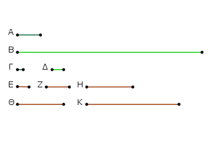
῾Ο Γ γὰρ ἑαυτὸν πολλαπλασιάσας τὸν Ε ποιείτω, ὁ δὲ Δ ἑαυτὸν πολλαπλασιάσας τὸν Η ποιείτω, καὶ ἔτι ὁ Γ τὸν Δ πολλαπλασιάσας τὸν Ζ [ποιείτω], ἑκάτερος δὲ τῶν Γ, Δ τὸν Ζ πολλαπλασιάσας ἑκάτερον τῶν Θ, Κ ποιείτω.
φανερὸν δή, ὅτι οἱ Ε, Ζ, Η καὶ οἱ Α, Θ, Κ, Β ἑξῆς ἀνάλογόν εἰσιν ἐν τῷ τοῦ Γ πρὸς τὸν Δ λόγῳ. καὶ ἐπεὶ οἱ Α, Θ, Κ, Β ἑξῆς ἀνάλογόν εἰσιν, καὶ μετρεῖ ὁ Α τὸν Β, μετρεῖ ἄρα καὶ τὸν Θ. καί ἐστιν ὡς ὁ Α πρὸς τὸν Θ, οὕτως ὁ Γ πρὸς τὸν Δ· μετρεῖ ἄρα καὶ ὁ Γ τὸν Δ.
᾿Αλλὰ δὴ μετρείτω ὁ Γ τὸν Δ· λέγω, ὅτι καὶ ὁ Α τὸν Β μετρήσει. Τῶν γὰρ αὐτῶν κατασκευασθέντων ὁμοίως δὴ δείξομεν, ὅτι οἱ Α, Θ, Κ, Β ἑξῆς ἀνάλογόν εἰσιν ἐν τῷ τοῦ Γ πρὸς τὸν Δ λόγῳ. καὶ ἐπεὶ ὁ Γ τὸν Δ μετρεῖ, καί ἐστιν ὡς ὁ Γ πρὸς τὸν Δ, οὕτως ὁ Α πρὸς τὸν Θ, καὶ ὁ Α ἄρα τὸν Θ μετρεῖ· ὥστε καὶ τὸν Β μετρεῖ ὁ Α· ὅπερ ἔδει δεῖξαι.
᾿Εὰν τετράγωνος ἀριθμὸς τετράγωνον ἀριθμὸν μὴ μετρῇ, οὐδὲ ἡ πλευρὰ τὴν πλευρὰν μετρήσει· κἂν ἡ πλευρὰ τὴν πλευρὰν μὴ μετρῇ, οὐδὲ ὁ τετράγωνος τὸν τετράγωνον μετρήσει.
῎Εστωσαν τετρὰγωνοι ἀριθμοὶ οἱ Α, Β, πλευραὶ δὲ αὐτῶν ἔστωσαν οἱ Γ, Δ, καὶ μὴ μετρείτω ὁ Α τὸν Β· λὲγω, ὅτι οὐδὲ ὁ Γ τὸν Δ μετρεῖ.
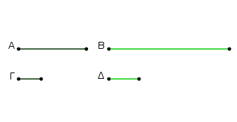
Εἰ γὰρ μετρεῖ ὁ Γ τὸν Δ, μετρήσει καὶ ὁ Α τὸν Β. οὐ μετρεῖ δὲ ὁ Α τὸν Β· οὐδὲ ἄρα ὁ Γ τὸν Δ μετρήσει. Μὴ μετρείτω [δὴ] πάλιν ὁ Γ τὸν Δ· λέγω, ὅτι οὐδὲ ὁ Α τὸν Β μετρήσει. Εἰ γὰρ μετρεῖ ὁ Α τὸν Β, μετρήσει καὶ ὁ Γ τὸν Δ. οὐ μετρεῖ δὲ ὁ Γ τὸν Δ· οὐδ᾿ ἄρα ὁ Α τὸν Β μετρήσει· ὅπερ ἔδει δεῖξαι.
᾿Εὰν κύβος ἀριθμὸς κύβον ἀριθμὸν μὴ μετρῇ, οὐδὲ ἡ πλευρὰ τὴν πλευρὰν μετρήσει· κἂν ἡ πλευρὰ τὴν πλευρὰν μὴ μετρῇ, οὐδὲ ὁ κύβος τὸν κύβον μετρήσει.
Κύβος γὰρ ἀριθμὸς ὁ Α κύβον ἀριθμὸν τὸν Β μὴ μετρείτω, καὶ τοῦ μὲν Α πλευρὰ ἔστω ὁ Γ, τοῦ δὲ Β ὁ Δ· λέγω, ὅτι ὁ Γ τὸν Δ οὐ μετρήσει.
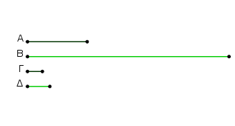
Εἰ γὰρ μετρεῖ ὁ Γ τὸν Δ, καὶ ὁ Α τὸν Β μετρήσει. οὐ μετρεῖ δὲ ὁ Α τὸν Β· οὐδ᾿ ἄρα ὁ Γ τὸν Δ μετρεῖ. ᾿Αλλὰ δὴ μὴ μετρείτω ὁ Γ τὸν Δ· λέγω, ὅτι οὐδὲ ὁ Α τὸν Β μετρήσει. Εἰ γὰρ ὁ Α τὸν Β μετρεῖ, καὶ ὁ Γ τὸν Δ μετρήσει. οὐ μετρεῖ δὲ ὁ Γ τὸν Δ· οὐδ᾿ ἄρα ὁ Α τὸν Β μετρήσει· ὅπερ ἔδει δεῖξαι.
Δύο ὁμοίων ἐπιπέδων ἀριθμῶν εἷς μέσος ἀνάλογόν ἐστιν ἀριθμός· καὶ ὁ ἐπίπεδος πρὸς τὸν ἐπίπεδον διπλασίονα λόγον ἔχει ἤπερ ἡ ὁμόλογος πλευρὰ πρὸς τὴν ὁμόλογον πλευράν.
῎Εστωσαν δύο ὅμοιοι ἐπίπεδοι ἀριθμοὶ οἱ Α, Β, καὶ τοῦ μὲν Α πλευραὶ ἔστωσαν οἱ Γ, Δ ἀριθμοί, τοῦ δὲ Β οἱ Ε, Ζ. καὶ ἐπεὶ ὅμοιοι ἐπίπεδοί εἰσιν οἱ ἀνάλογον ἔχοντες τὰς πλευράς, ἔστιν ἄρα ὡς ὁ Γ πρὸς τὸν Δ, οὕτως ὁ Ε πρὸς τὸν Ζ. λέγω οὖν, ὅτι τῶν Α, Β εἷς μέσος ἀνάλογόν ἐστιν ἀριθμός, καὶ ὁ Α πρὸς τὸν Β διπλασίονα λόγον ἔχει ἤπερ ὁ Γ πρὸς τὸν Ε ἢ ὁ Δ πρὸς τὸν Ζ, τουτέστιν ἤπερ ἡ ὁμόλογος πλευρὰ πρὸς τὴν ὁμόλογον [πλευράν].
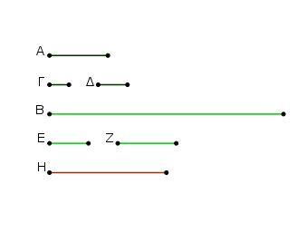
Καὶ ἐπεί ἐστιν ὡς ὁ Γ πρὸς τὸν Δ, οὕτως ὁ Ε πρὸς τὸν Ζ, ἐναλλὰξ ἄρα ἐστὶν ὡς ὁ Γ πρὸς τὸν Ε, ὁ Δ πρὸς τὸν Ζ. καὶ ἐπεὶ ἐπίπεδός ἐστιν ὁ Α, πλευραὶ δὲ αὐτοῦ οἱ Γ, Δ, ὁ Δ ἄρα τὸν Γ πολλαπλασιάσας τὸν Α πεποίηκεν. διὰ τὰ αὐτὰ δὴ καὶ ὁ Ε τὸν Ζ πολλαπλασιάσας τὸν Β πεποίηκεν. ὁ Δ δὴ τὸν Ε πολλαπλασιάσας τὸν Η ποιείτω.
καὶ ἐπεὶ ὁ Δ τὸν μὲν Γ πολλαπλασιάσας τὸν Α πεποίηκεν, τὸν δὲ Ε πολλαπλασιάσας τὸν Η πεποίηκεν, ἔστιν ἄρα ὡς ὁ Γ πρὸς τὸν Ε, οὕτως ὁ Α πρὸς τὸν Η. ἀλλ᾿ ὡς ὁ Γ πρὸς τὸν Ε, [οὕτως] ὁ Δ πρὸς τὸν Ζ· καὶ ὡς ἄρα ὁ Δ πρὸς τὸν Ζ, οὕτως ὁ Α πρὸς τὸν Η.
πάλιν, ἐπεὶ ὁ Ε τὸν μὲν Δ πολλαπλασιάσας τὸν Η πεποίηκεν, τὸν δὲ Ζ πολλαπλασιάσας τὸν Β πεποίηκεν, ἔστιν ἄρα ὡς ὁ Δ πρὸς τὸν Ζ, οὕτως ὁ Η πρὸς τὸν Β. ἐδείχθη δὲ καὶ ὡς ὁ Δ πρὸς τὸν Ζ, οὕτως ὁ Α πρὸς τὸν Η· καὶ ὡς ἄρα ὁ Α πρὸς τὸν Η, οὕτως ὁ Η πρὸς τὸν Β. οἱ Α, Η, Β ἄρα ἑξῆς ἀνάλογόν εἰσιν. τῶν Α, Β ἄρα εἷς μέσος ἀνάλογόν ἐστιν ἀριθμός.
Λέγω δή, ὅτι καὶ ὁ Α πρὸς τὸν Β διπλασίονα λόγον ἔχει ἤπερ ἡ ὁμόλογος πλευρὰ πρὸς τὴν ὁμόλογον πλευράν, τουτέστιν ἤπερ ὁ Γ πρὸς τὸν Ε ἢ ὁ Δ πρὸς τὸν Ζ.
ἐπεὶ γὰρ οἱ Α, Η, Β ἑξῆς ἀνάλογόν εἰσιν, ὁ Α πρὸς τὸν Β διπλασίονα λόγον ἔχει ἤπερ πρὸς τὸν Η. καί ἐστιν ὡς ὁ Α πρὸς τὸν Η, οὕτως ὅ τε Γ πρὸς τὸν Ε καὶ ὁ Δ πρὸς τὸν Ζ. καὶ ὁ Α ἄρα πρὸς τὸν Β διπλασίονα λόγον ἔχει ἤπερ ὁ Γ πρὸς τὸν Ε ἢ ὁ Δ πρὸς τὸν Ζ· ὅπερ ἔδει δεῖξαι.
Δύο ὁμοίων στερεῶν ἀριθμῶν δύο μέσοι ἀνάλογον ἐμπίπτουσιν ἀριθμοί· καὶ ὁ στερεὸς πρὸς τὸν ὅμοιον στερεὸν τριπλασίονα λόγον ἔχει ἤπερ ἡ ὁμόλογος πλευρὰ πρὸς τὴν ὁμόλογον πλευράν.
῎Εστωσαν δύο ὅμοιοι στερεοὶ οἱ Α, Β, καὶ τοῦ μὲν Α πλευραὶ ἔστωσαν οἱ Γ, Δ, Ε, τοῦ δὲ Β οἱ Ζ, Η, Θ. καὶ ἐπεὶ ὅμοιοι στερεοί εἰσιν οἱ ἀνάλογον ἔχοντες τὰς πλευράς, ἔστιν ἄρα ὡς μὲν ὁ Γ πρὸς τὸν Δ, οὕτως ὁ Ζ πρὸς τὸν Η, ὡς δὲ ὁ Δ πρὸς τὸν Ε, οὕτως ὁ Η πρὸς τὸν Θ. λέγω, ὅτι τῶν Α, Β δύο μέσοι ἀνάλογόν ἐμπίπτουσιν ἀριθμοί, καὶ ὁ Α πρὸς τὸν Β τριπλασίονα λόγον ἔχει ἤπερ ὁ Γ πρὸς τὸν Ζ καὶ ὁ Δ πρὸς τὸν Η καὶ ἔτι ὁ Ε πρὸς τὸν Θ.
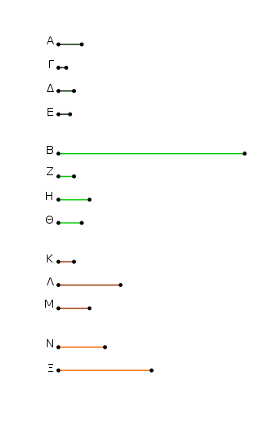
῾Ο Γ γὰρ τὸν Δ πολλαπλασιάσας τὸν Κ ποιείτω, ὁ δὲ Ζ τὸν Η πολλαπλασιάσας τὸν Λ ποιείτω. καὶ ἐπεὶ οἱ Γ, Δ τοὶς Ζ, Η ἐν τῷ αὐτῷ λόγῳ εἰσίν, καὶ ἐκ μὲν τῶν Γ, Δ ἐστιν ὁ Κ, ἐκ δὲ τῶν Ζ, Η ὁ Λ, οἱ Κ, Λ [ἄρα] ὅμοιοι ἐπίπεδοί εἰσιν ἀριθμοί· τῶν Κ, Λ ἄρα εἷς μέσος ἀνάλογόν ἐστιν ἀριθμός. ἔστω ὁ Μ. ὁ Μ ἄρα ἐστὶν ὁ ἐκ τῶν Δ, Ζ, ὡς ἐν τῷ πρὸ τούτου θεωρήματι ἐδείχθη.
καὶ ἐπεὶ ὁ Δ τὸν μὲν Γ πολλαπλασιάσας τὸν Κ πεποίηκεν, τὸν δὲ Ζ πολλαπλασιάσας τὸν Μ πεποίηκεν, ἔστιν ἄρα ὡς ὁ Γ πρὸς τὸν Ζ, οὕτως ὁ Κ πρὸς τὸν Μ. ἀλλ᾿ ὡς ὁ Κ πρὸς τὸν Μ, ὁ Μ πρὸς τὸν Λ. οἱ Κ, Μ, Λ ἄρα ἑξῆς εἰσιν ἀνάλογον ἐν τῷ τοῦ Γ πρὸς τὸν Ζ λόγῷ. καὶ ἐπεί ἐστιν ὡς ὁ Γ πρὸς τὸν Δ, οὕτως ὁ Ζ πρὸς τὸν Η, ἐναλλὰξ ἄρα ἐστὶν ὡς ὁ Γ πρὸς τὸν Ζ, οὕτως ὁ Δ πρὸς τὸν Η.
διὰ τὰ αὐτὰ δὴ καὶ ὡς ὁ Δ πρὸς τὸν Η, οὕτως ὁ Ε πρὸς τὸν Θ. οἱ Κ, Μ, Λ ἄρα ἑξῆς εἰσιν ἀνάλογον ἔν τε τῷ τοῦ Γ πρὸς τὸν Ζ λόγῳ καὶ τῷ τοῦ Δ πρὸς τὸν Η καὶ ἔτι τῷ τοῦ Ε πρὸς τὸν Θ. ἑκατερος δὴ τῶν Ε, Θ τὸν Μ πολλαπλασιάσας ἑκάτερον τῶν Ν, Ξ ποιείτω.
καὶ ἐπεὶ στερεός ἐστιν ὁ Α, πλευραὶ δὲ αὐτοῦ εἰσιν οἱ Γ, Δ, Ε, ὁ Ε ἄρα τὸν ἐκ τῶν Γ, Δ πολλαπλασιάσας τὸν Α πεποίηκεν. ὁ δὲ ἐκ τῶν Γ, Δ ἐστιν ὁ Κ· ὁ Ε ἄρα τὸν Κ πολλαπλασιάσας τὸν Α πεποίηκεν. διὰ τὰ αὐτὰ δὴ καὶ ὁ Θ τὸν Λ πολλαπλασιάσας τὸν Β πεποίηκεν.
καὶ ἐπεὶ ὁ Ε τὸν Κ πολλαπλασιάσας τὸν Α πεποίηκεν, ἀλλὰ μὴν καὶ τὸν Μ πολλαπλασιάσας τὸν Ν πεποίηκεν, ἔστιν ἄρα ὡς ὁ Κ πρὸς τὸν Μ, οὕτως ὁ Α πρὸς τὸν Ν. ὡς δὲ ὁ Κ πρὸς τὸν Μ, οὕτως ὅ τε Γ πρὸς τὸν Ζ καὶ ὁ Δ πρὸς τὸν Η καὶ ἔτι ὁ Ε πρὸς τὸν Θ· καὶ ὡς ἄρα ὁ Γ πρὸς τὸν Ζ καὶ ὁ Δ πρὸς τὸν Η καὶ ὁ Ε πρὸς τὸν Θ, οὕτως ὁ Α πρὸς τὸν Ν.
πάλιν, ἐπεὶ ἑκάτερος τῶν Ε, Θ τὸν Μ πολλαπλασιάσας ἑκάτερον τῶν Ν, Ξ πεποίηκεν, ἔστιν ἄρα ὡς ὁ Ε πρὸς τὸν Θ, οὕτως ὁ Ν πρὸς τὸν Ξ. ἀλλ᾿ ὡς ὁ Ε πρὸς τὸν Θ, οὕτως ὅ τε Γ πρὸς τὸν Ζ καὶ ὁ Δ πρὸς τὸν Η· καὶ ὡς ἄρα ὁ Γ πρὸς τὸν Ζ καὶ ὁ Δ πρὸς τὸν Η καὶ ὁ Ε πρὸς τὸν Θ, οὕτως ὅ τε Α πρὸς τὸν Ν καὶ ὁ Ν πρὸς τὸν Ξ.
πάλιν, ἐπεὶ ὁ Θ τὸν Μ πολλαπλασιάσας τὸν Ξ πεποίηκεν, ἀλλὰ μὴν καὶ τὸν Λ πολλαπλασιάσας τὸν Β πεποίηκεν, ἔστιν ἄρα ὡς ὁ Μ πρὸς τὸν Λ, οὕτως ὁ Ξ πρὸς τὸν Β. ἀλλ᾿ ὡς ὁ Μ πρὸς τὸν Λ, οὕτως ὅ τε Γ πρὸς τὸν Ζ καὶ ὁ Δ πρὸς τὸν Η καὶ ὁ Ε πρὸς τὸν Θ. καὶ ὡς ἄρα ὁ Γ πρὸς τὸν Ζ καὶ ὁ Δ πρὸς τὸν Η καὶ ὁ Ε πρὸς τὸν Θ, οὕτως οὐ μόνον ὁ Ξ πρὸς τὸν Β, ἀλλὰ καὶ ὁ Α πρὸς τὸν Ν καὶ ὁ Ν πρὸς τὸν Ξ. οἱ Α, Ν, Ξ, Β ἄρα ἑξῆς εἰσιν ἀνάλογον ἐν τοῖς εἰρημένοις τῶν πλευρῶν λόγοις.
Λέγω, ὅτι καὶ ὁ Α πρὸς τὸν Β τριπλασίονα λόγον ἔχει ἤπερ ἡ ὁμόλογος πλευρὰ πρὸς τὴν ὁμόλογον πλευράν, τουτέστιν ἤπερ ὁ Γ ἀριθμὸς πρὸς τὸν Ζ ἢ ὁ Δ πρὸς τὸν Η καὶ ἔτι ὁ Ε πρὸς τὸν Θ.
ἐπεὶ γὰρ τέσσαρες ἀριθμοὶ ἑξῆς ἀνάλογόν εἰσιν οἱ Α, Ν, Ξ, Β, ὁ Α ἄρα πρὸς τὸν Β τριπλασίονα λόγον ἔχει ἤπερ ὁ Α πρὸς τὸν Ν. ἀλλ᾿ ὡς ὁ Α πρὸς τὸν Ν, οὕτως ἐδείχθη ὅ τε Γ πρὸς τὸν Ζ καὶ ὁ Δ πρὸς τὸν Η καὶ ἔτι ὁ Ε πρὸς τὸν Θ. καὶ ὁ Α ἄρα πρὸς τὸν Β τριπλασίονα λόγον ἔχει ἤπερ ἡ ομόλογος πλευρὰ πρὸς τὴν ὁμόλογον πλευράν, τουτέστιν ἤπερ ὁ Γ ἀριθμὸς πρὸς τὸν Ζ καὶ ὁ Δ πρὸς τὸν Η καὶ ἔτι ὁ Ε πρὸς τὸν Θ· ὅπερ ἔδει δεῖξαι.
᾿Εὰν δύο ἀριθμῶν εἷς μέσος ἀνάλογον ἐμπίπτῇ ἀριθμός, ὅμοιοι ἐπίπεδοι ἔσονται οἱ ἀριθμοί.
Δύο γὰρ ἀριθμῶν τῶν Α, Β εἷς μέσος ἀνάλογον ἐμπιπτέτω ἀριθμὸς ὁ Γ· λέγω, ὅτι οἱ Α, Β ὅμοιοι ἐπίπεδοί εἰσιν ἀριθμοί.
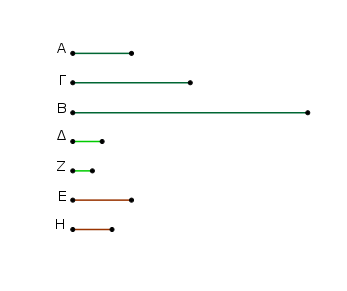
Εἰλήφθωσαν [γὰρ] ἐλάχιστοι ἀριθμοὶ τῶν τὸν αὐτὸν λόγον ἐχόντων τοῖς Α, Γ οἱ Δ, Ε· ἰσάκις ἄρα ὁ Δ τὸν Α μετρεῖ καὶ ὁ Ε τὸν Γ. ὁσάκις δὴ ὁ Δ τὸν Α μετρεῖ, τοσαῦται μονάδες ἔστωσαν ἐν τῷ Ζ· ὁ Ζ ἄρα τὸν Δ πολλαπλασιάσας τὸν Α πεποίηκεν. ὥστε ὁ Α ἐπίπεδός ἐστιν, πλευραὶ δὲ αὐτοῦ οἱ Δ, Ζ.
πάλιν, ἐπεὶ οἱ Δ, Ε ἐλάχιστοί εἰσι τῶν τὸν αὐτὸν λόγον ἐχόντων τοῖς Γ, Β, ἰσάκις ἄρα ὁ Δ τὸν Γ μετρεῖ καὶ ὁ Ε τὸν Β. ὁσάκις δὴ ὁ Ε τὸν Β μετρεῖ, τοσαῦται μονάδες ἔστωσαν ἐν τῷ Η. ὁ Ε ἄρα τὸν Β μετρεῖ κατὰ τὰς ἐν τῷ Η μονάδας· ὁ Η ἄρα τὸν Ε πολλαπλασιάσας τὸν Β πεποίηκεν. ὁ Β ἄρα ἐπίπεδος ἐστι, πλευραὶ δὲ αὐτοῦ εἰσιν οἱ Ε, Η. οἱ Α, Β ἄρα ἐπίπεδοί εἰσιν ἀριθμοί.
λέγω δή, ὅτι καὶ ὅμοιοι. ἐπεὶ γὰρ ὁ Ζ τὸν μὲν Δ πολλαπλασιάσας τὸν Α πεποίηκεν, τὸν δὲ Ε πολλαπλασιάσας τὸν Γ πεποίηκεν, ἔστιν ἄρα ὡς ὁ Δ πρὸς τὸν Ε, οὕτως ὁ Α πρὸς τὸν Γ, τουτέστιν ὁ Γ πρὸς τὸν Β. πάλιν, ἐπεὶ ὁ Ε ἑκάτερον τῶν Ζ, Η πολλαπλασιάσας τοὺς Γ, Β πεποίηκεν, ἔστιν ἄρα ὡς ὁ Ζ πρὸς τὸν Η, οὕτως ὁ Γ πρὸς τὸν Β. ὡς δὲ ὁ Γ πρὸς τὸν Β, οὕτως ὁ Δ πρὸς τὸν Ε· καὶ ὡς ἄρα ὁ Δ πρὸς τὸν Ε, οὕτως ὁ Ζ πρὸς τὸν Η· καὶ ἐναλλὰξ ὡς ὁ Δ πρὸς τὸν Ζ, οὕτως ὁ Ε πρὸς τὸν Η.
οἱ Α, Β ἄρα ὅμοιοι ἐπίπεδοι ἀριθμοί εἰσιν· αἱ γὰρ πλευραὶ αὐτῶν ἀνάλογόν εἰσιν· ὅπερ ἔδει δεῖξαι.
᾿Εὰν δύο ἀριθμῶν δύο μέσοι ἀνάλογον ἐμπίπτωσιν ἀριθμοί, ὅμοιοι στερεοί εἰσιν οἱ ἀριθμοί.
Δύο γὰρ ἀριθμῶν τῶν Α, Β δύο μέσοι ἀνάλογον ἐμπιπτέτωσαν ἀριθμοὶ οἱ Γ, Δ· λέγω, ὅτι οἱ Α, Β ὅμοιοι στερεοί εἰσιν. Εἰλήφθωσαν γὰρ ἐλάχιστοι ἀριθμοὶ τῶν τὸν αὐτὸν λόγον ἐχόντων τοῖς Α, Γ, Δ τρεῖς οἱ Ε, Ζ, Η· οἱ ἄρα ἄκροι αὐτῶν οἱ Ε, Η πρῶτοι πρὸς ἀλλήλους εἰσίν. καὶ ἐπεὶ τῶν Ε, Η εἷς μέσος ἀνάλογον ἐμπέπτωκεν ἀριθμὸς ὁ Ζ, οἱ Ε, Η ἄρα ἀριθμοὶ ὅμοιοι ἐπίπεδοί εἰσιν.
ἔστωσαν οὖν τοῦ μὲν Ε πλευραὶ οἱ Θ, Κ, τοῦ δὲ Η οἱ Λ, Μ. φανερὸν ἄρα ἐστὶν ἐκ τοῦ πρὸ τούτου, ὅτι οἱ Ε, Ζ, Η ἑξῆς εἰσιν ἀνάλογον ἔν τε τῷ τοῦ Θ πρὸς τὸν Λ λόγῳ καὶ τῷ τοῦ Κ πρὸς τὸν Μ. καὶ ἐπεὶ οἱ Ε, Ζ, Η ἐλάχιστοί εἰσι τῶν τὸν αὐτὸν λόγον ἐχόντων τοῖς Α, Γ, Δ, καί ἐστιν ἴσον τὸ πλῆθος τῶν Ε, Ζ, Η τῷ πλήθει τῶν Α, Γ, Δ, δι᾿ ἴσου ἄρα ἐστὶν ὡς ὁ Ε πρὸς τὸν Η, οὕτως ὁ Α πρὸς τὸν Δ.
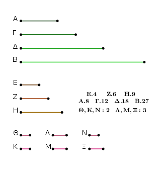
οἱ δὲ Ε, Η πρῶτοι, οἱ δὲ πρῶτοι καὶ ἐλάχιστοι, οἱ δὲ ἐλάχιστοι μετροῦσι τοὺς τὸν αὐτὸν λόγον ἔχοντας αὐτοῖς ἰσάκις ὅ τε μείζων τὸν μείζονα καὶ ὁ ἐλάσσων τὸν ἐλάσσονα, τουτέστιν ὅ τε ἡγούμενος τὸν ἡγούμενον καὶ ὁ ἑπόμενος τὸν ἑπόμενον· ἰσάκις ἄρα ὁ Ε τὸν Α μετρεῖ καὶ ὁ Η τὸν Δ. ὁσάκις δὴ ὁ Ε τὸν Α μετρεῖ, τοσαῦται μονάδες ἔστωσαν ἐν τῷ Ν. ὁ Ν ἄρα τὸν Ε πολλαπλασιάσας τὸν Α πεποίηκεν. ὁ δὲ Ε ἐστιν ὁ ἐκ τῶν Θ, Κ· ὁ Ν ἄρα τὸν ἐκ τῶν Θ, Κ πολλαπλασιάσας τὸν Α πεποίηκεν. στερεὸς ἄρα ἐστὶν ὁ Α, πλευραὶ δὲ αὐτοῦ εἰσιν οἱ Θ, Κ, Ν.
πάλιν, ἐπεὶ οἱ Ε, Ζ, Η ἐλάχιστοί εἰσι τῶν τὸν αὐτὸν λόγον ἐχόντων τοῖς Γ, Δ, Β, ἰσάκις ἄρα ὁ Ε τὸν Γ μετρεῖ καὶ ὁ Η τὸν Β. ὁσάκις δὴ ὁ Ε τὸν Γ μετρεῖ, τοσαῦται μονάδες ἔστωσαν ἐν τῷ Ξ. ὁ Η ἄρα τὸν Β μετρεῖ κατὰ τὰς ἐν τῷ Ξ μονάδας· ὁ Ξ ἄρα τὸν Η πολλαπλασιάσας τὸν Β πεποίηκεν. ὁ δὲ Η ἐστιν ὁ ἐκ τῶν Λ, Μ· ὁ Ξ ἄρα τὸν ἐκ τῶν Λ, Μ πολλαπλασιάσας τὸν Β πεποίηκεν. στερεὸς ἄρα ἐστὶν ὁ Β, πλευραὶ δὲ αὐτοῦ εἰσιν οἱ Λ, Μ, Ξ· οἱ Α, Β ἄρα στερεοί εἰσιν.
Λέγω [δή], ὅτι καὶ ὅμοιοι. ἐπεὶ γὰρ οἱ Ν, Ξ τὸν Ε πολλαπλασιάσαντες τοὺς Α, Γ πεποιήκασιν, ἔστιν ἄρα ὡς ὁ Ν πρὸς τὸν Ξ, ὁ Α πρὸς τὸν Γ, τουτέστιν ὁ Ε πρὸς τὸν Ζ. ἀλλ᾿ ὡς ὁ Ε πρὸς τὸν Ζ, ὁ Θ πρὸς τὸν Λ καὶ ὁ Κ πρὸς τὸν Μ· καὶ ὡς ἄρα ὁ Θ πρὸς τὸν Λ, οὕτως ὁ Κ πρὸς τὸν Μ καὶ ὁ Ν πρὸς τὸν Ξ. καί εἰσιν οἱ μὲν Θ, Κ, Ν πλευραὶ τοῦ Α, οἱ δὲ Ξ, Λ, Μ πλευραὶ τοῦ Β. οἱ Α, Β ἄρα ἀριθμοὶ ὅμοιοι στερεοί εἰσιν· ὅπερ ἔδει δεῖξαι.
᾿Εὰν τρεῖς ἀριθμοὶ ἑξῆς ἀνάλογον ὦσιν, ὁ δὲ πρῶτος τετράγωνος ᾖ, καὶ ὁ τρίτος τετράγωνος ἔσται.
῎Εστωσαν τρεῖς ἀριθμοὶ ἑξῆς ἀνάλογον οἱ Α, Β, Γ, ὁ δὲ πρῶτος ὁ Α τετράγωνος ἔστω· λέγω, ὅτι καὶ ὁ τρίτος ὁ Γ τετράγωνός ἐστιν.
᾿Επεὶ γὰρ τῶν Α, Γ εἷς μέσος ἀνάλογόν ἐστιν ἀριθμὸς ὁ Β, οἱ Α, Γ ἄρα ὅμοιοι ἐπίπεδοί εἰσιν. τετράγωνος δὲ ὁ Α· τετράγωνος ἄρα καὶ ὁ Γ· ὅπερ ἔδει δεῖξαι.
᾿Εὰν τέσσαρες ἀριθμοὶ ἑξῆς ἀνάλογον ὦσιν, ὁ δὲ πρῶτος κύβος ᾖ, καὶ ὁ τέταρτος κύβος ἔσται.
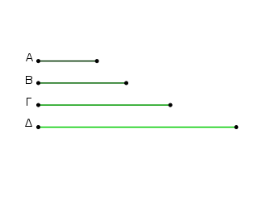
῎Εστωσαν τέσσαρες ἀριθμοὶ ἑξῆς ἀνάλογον οἱ Α, Β, Γ, Δ, ὁ δὲ Α κύβος ἔστω· λέγω, ὅτι καὶ ὁ Δ κύβος ἐστίν.
᾿Επεὶ γὰρ τῶν Α, Δ δύο μέσοι ἀνάλογόν εἰσιν ἀριθμοὶ οἱ Β, Γ, οἱ Α, Δ ἄρα ὅμοιοί εἰσι στερεοὶ ἀριθμοί. κύβος δὲ ὁ Α· κύβος ἄρα καὶ ὁ Δ· ὅπερ ἔδει δεῖξαι.
᾿Εὰν δύο ἀριθμοὶ πρὸς ἀλλήλους λόγον ἔχωσιν, ὃν τετράγωνος ἀριθμὸς πρὸς τετράγωνον ἀριθμόν, ὁ δὲ πρῶτος τετράγωνος ᾖ, καὶ ὁ δεύτερος τετράγωνος ἔσται.
Δύο γὰρ ἀριθμοὶ οἱ Α, Β πρὸς ἀλλήλους λόγον ἐχέτωσαν, ὃν τετράγωνος ἀριθμὸς ὁ Γ πρὸς τετράγωνον ἀριθμὸν τὸν Δ, ὁ δὲ Α τετράγωνος ἔστω· λέγω, ὅτι καὶ ὁ Β τετράγωνός ἐστιν.
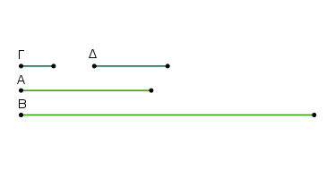
᾿Επεὶ γὰρ οἱ Γ, Δ τετράγωνοί εἰσιν, οἱ Γ, Δ ἄρα ὅμοιοι ἐπίπεδοί εἰσιν. τῶν Γ, Δ ἄρα εἷς μέσος ἀνάλογον ἐμπίπτει ἀριθμός. καί ἐστιν ὡς ὁ Γ πρὸς τὸν Δ, ὁ Α πρὸς τὸν Β· καὶ τῶν Α, Β ἄρα εἷς μέσος ἀνάλογον ἐμπίπτει ἀριθμός. καί ἐστιν ὁ Α τετράγωνος· καὶ ὁ Β ἄρα τετράγωνός ἐστιν· ὅπερ ἔδει δεῖξαι.
᾿Εὰν δύο ἀριθμοὶ πρὸς ἀλλήλους λόγον ἔχωσιν, ὃν κύβος ἀριθμὸς πρὸς κύβον ἀριθμόν, ὁ δὲ πρῶτος κύβος ᾖ, καὶ ὁ δεύτερος κύβος ἔσται.
Δύο γὰρ ἀριθμοὶ οἱ Α, Β πρὸς ἀλλήλους λόγον ἐχέτωσαν, ὃν κύβος ἀριθμὸς ὁ Γ πρὸς κύβον ἀριθμὸν τὸν Δ, κύβος δὲ ἔστω ὁ Α· λέγω [δή], ὅτι καὶ ὁ Β κύβος ἐστίν.
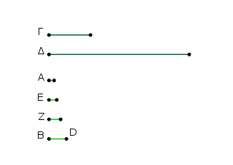
᾿Επεὶ γὰρ οἱ Γ, Δ κύβοι εἰσίν, οἱ Γ, Δ ὅμοιοι στερεοί εἰσιν· τῶν Γ, Δ ἄρα δύο μέσοι ἀνάλογον ἐμπίπτουσιν ἀριθμοί. ὅσοι δὲ εἰς τοὺς Γ, Δ μεταξὺ κατὰ τὸ συνεχὲς ἀνάλογον ἐμπίπτουσιν, τοσοῦτοι καὶ εἰς τοὺς τὸν αὐτὸν λόγον ἔχοντας αὐτοῖς· ὥστε καὶ τῶν Α, Β δύο μέσοι ἀνάλογον ἐμπίπτουσιν ἀριθμοί. ἐμπιπτέτωσαν οἱ Ε, Ζ.
ἐπεὶ οὖν τέσσαρες ἀριθμοὶ οἱ Α, Ε, Ζ, Β ἑξῆς ἀνάλογόν εἰσιν, καί ἐστι κύβος ὁ Α, κύβος ἄρα καὶ ὁ Β· ὅπερ ἔδει δεῖξαι.
Οἱ ὅμοιοι ἐπίπεδοι ἀριθμοὶ πρὸς ἀλλήλους λόγον ἔχουσιν, ὃν τετράγωνος ἀριθμὸς πρὸς τετράγωνον ἀριθμόν.
῎Εστωσαν ὅμοιοι ἐπίπεδοι ἀριθμοὶ οἱ Α, Β· λέγω, ὅτι ὁ Α πρὸς τὸν Β λόγον ἔχει, ὃν τετράγωνος ἀριθμὸς πρὸς τετράγωνον ἀριθμόν.
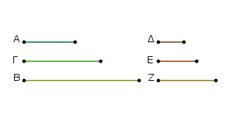
᾿Επεὶ γὰρ οἱ Α, Β ὅμοιοι ἐπίπεδοί εἰσιν, τῶν Α, Β ἄρα εἷς μέσος ἀνάλογον ἐμπίπτει ἀριθμός. ἐμπιπτέτω καὶ ἔστω ὁ Γ, καὶ εἰλήφθωσαν ἐλάχιστοι ἀριθμοὶ τῶν τὸν αὐτὸν λόγον ἐχόντων τοῖς Α, Γ, Β οἱ Δ, Ε, Ζ· οἱ ἄρα ἄκροι αὐτῶν οἱ Δ, Ζ τετράγωνοί εἰσιν.
καὶ ἐπεί ἐστιν ὡς ὁ Δ πρὸς τὸν Ζ, οὕτως ὁ Α πρὸς τὸν Β, καί εἰσιν οἱ Δ, Ζ τετράγωνοι, ὁ Α ἄρα πρὸς τὸν Β λόγον ἔχει, ὃν τετράγωνος ἀριθμὸς πρὸς τετράγωνον ἀριθμόν· ὅπερ ἔδει δεῖξαι.
Οἱ ὅμοιοι στερεοὶ ἀριθμοὶ πρὸς ἀλλήλους λόγον ἔχουσιν, ὃν κύβος ἀριθμὸς πρὸς κύβον ἀριθμόν.
῎Εστωσαν ὅμοιοι στερεοὶ ἀριθμοὶ οἱ Α, Β· λέγω, ὅτι ὁ Α πρὸς τὸν Β λόγον ἔχει, ὃν κύβος ἀριθμὸς πρὸς κύβον ἀριθμόν.
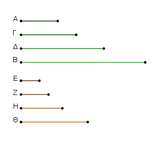
᾿Επεὶ γὰρ οἱ Α, Β ὅμοιοι στερεοί εἰσιν, τῶν Α, Β ἄρα δύο μέσοι ἀνάλογον ἐμπίπτουσιν ἀριθμοί. ἐμπιπτέτωσαν οἱ Γ, Δ, καὶ εἰλήφθωσαν ἐλάχιστοι ἀριθμοὶ τῶν τὸν αὐτὸν λόγον ἐχόντων τοῖς Α, Γ, Δ, Β ἴσοι αὐτοῖς τὸ πλῆθος οἱ Ε, Ζ, Η, Θ· οἱ ἄρα ἄκροι αὐτῶν οἱ Ε, Θ κύβοι εἰσίν.
καί ἐστιν ὡς ὁ Ε πρὸς τὸν Θ, οὕτως ὁ Α πρὸς τὸν Β· καὶ ὁ Α ἄρα πρὸς τὸν Β λόγον ἔχει, ὃν κύβος ἀριθμὸς πρὸς κύβον ἀριθμόν· ὅπερ ἔδει δεῖξαι.